<!doctype html>
<html lang="en">
<head>
  <meta charset="utf-8">
  <meta name="viewport" content="width=device-width, initial-scale=1">
  <title>arxiv digest — 2026-10-07</title>
  <style>
:root {
  --bg: #ffffff;
  --fg: #1f2328;
  --muted: #59636e;
  --border: #d0d7de;
  --card: #f6f8fa;
  --link: #0969da;
}
body {
  max-width: 980px;
  margin: 0 auto;
  padding: 2rem 1rem 5rem;
  font-family: -apple-system, BlinkMacSystemFont, "Segoe UI", Helvetica, Arial, sans-serif;
  line-height: 1.55;
  color: var(--fg);
  background: var(--bg);
}
a { color: var(--link); }
img { max-width: 100%; height: auto; }
pre, code { background: var(--card); border-radius: 6px; }
pre { padding: 1rem; overflow-x: auto; }
blockquote { border-left: 4px solid var(--border); padding-left: 1rem; color: var(--muted); }
details { margin: 0.6rem 0; }
summary { cursor: pointer; font-weight: 600; }
.paper-figures-scroll {
  display: flex;
  gap: 1rem;
  overflow-x: auto;
  overscroll-behavior-x: contain;
  padding: 0.75rem 0.25rem 1rem;
  margin: 1rem 0 1.25rem;
  border-top: 1px solid var(--border);
  border-bottom: 1px solid var(--border);
  scroll-snap-type: x proximity;
}
.paper-figure-card {
  flex: 0 0 min(260px, 72vw);
  scroll-snap-align: start;
  background: var(--card);
  border: 1px solid var(--border);
  border-radius: 12px;
  padding: 0.55rem;
}
.paper-figure-card img {
  display: block;
  width: 100%;
  max-height: 240px;
  object-fit: contain;
  background: white;
  border-radius: 8px;
}
.paper-figure-caption {
  display: block;
  margin-top: 0.5rem;
  color: var(--muted);
  font-size: 0.85rem;
}
.figure-strip-hint {
  color: var(--muted);
  font-size: 0.9rem;
  margin-bottom: -0.3rem;
}
</style>
  <!-- MathJax: renders $...$ inline math and $$...$$ display math, plus
       \(...\) and \[...\]. Loaded from the official CDN; works offline
       once cached. Configured to skip code/pre blocks so arxiv IDs that
       look like dollar amounts don't get mangled. -->
  <script>
    window.MathJax = {
      tex: {
        inlineMath: [['$', '$'], ['\\(', '\\)']],
        displayMath: [['$$', '$$'], ['\\[', '\\]']],
        processEscapes: true,
        processEnvironments: true
      },
      options: {
        skipHtmlTags: ['script', 'noscript', 'style', 'textarea', 'pre', 'code'],
        ignoreHtmlClass: 'tex2jax_ignore',
        processHtmlClass: 'tex2jax_process'
      }
    };
  </script>
  <script id="MathJax-script" async
    src="https://cdn.jsdelivr.net/npm/mathjax@3/es5/tex-chtml.js"></script>
</head>
<body>
<header style="background-color: #333; color: white; padding: 15px; margin-bottom: 20px;">
  <h1 style="margin: 0; font-size: 24px;">
    <a href="https://ochelpan.github.io/arXiv_clean/" style="color: white; text-decoration: none;">Main</a>
  </h1>
</header>

<h1>Daily arXiv Report</h1>

<hr>
<p>
<a href="index.html">← Index</a>
 · <a href="papers_02.html">Next →</a>
</p>
<hr>

<h2>Papers 1–20</h2>
<p><a id="paper-2610.06692"></a></p>
<h3 id="climbing-the-fusion-tree-center-ordering-and-decoding-hierarchy-in-non-abelian-mixed-states">⭐ <a href="http://arxiv.org/abs/2610.06692v1">Climbing the Fusion Tree: Center Ordering and Decoding Hierarchy in Non-Abelian Mixed States</a></h3>
<p><strong>Highlighted author(s):</strong> Ehud Altman<br>
<strong>Authors:</strong> Pablo Sala, Vlad Temkin, Cenke Xu, Daniel Podolsky, Ehud Altman<br>
<strong>Type:</strong> theory · <strong>Category:</strong> statistical mechanics · <strong>PDF:</strong> <a href="https://arxiv.org/pdf/2610.06692v1">https://arxiv.org/pdf/2610.06692v1</a><br>
<strong>Analysis basis:</strong> full PDF text, analyzed in chunks
<strong>Topic relevance:</strong> <code>quantum measurements</code> <strong>3/5</strong> · <code>Keldysh / 2PI / non-Gaussian methods</code> <strong>1/5</strong> · <code>analog quantum simulation</code> <strong>1/5</strong> · <code>correlated / nonlocal dissipation</code> <strong>1/5</strong> · <code>driven-dissipative phase transition</code> <strong>1/5</strong> · <code>methods for driven-dissipative</code> <strong>1/5</strong> · <code>non-equilibrium universality</code> <strong>1/5</strong></p>
<div class="figure-strip-hint">↔ Scroll figures horizontally</div>
<div class="paper-figures-scroll">
<figure class="paper-figure-card">
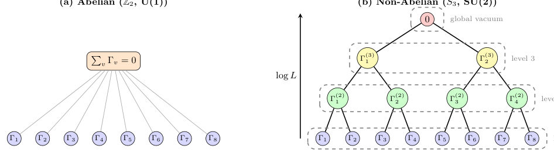
<figcaption class="paper-figure-caption"><b>Fig 1.</b> FIG. 1. Fusion tree structure. (a) For Abelian groups, every irrep is one-dimensional and fusion is deterministic: the constraint that all irreps fuse to the vacuum reduces to a single additive condition (parity for Z2, charge conservation P</figcaption>
</figure>
<figure class="paper-figure-card">
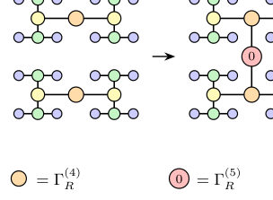
<figcaption class="paper-figure-caption"><b>Fig 2.</b> FIG. 2. Hierarchical syndrome measurements. Sequential measurement protocol starting with local irreps Γ(1) v . On each level of the measurement hierarchy, the measurement is performed on a pair of regions measured on the previous level.</figcaption>
</figure>
<figure class="paper-figure-card">
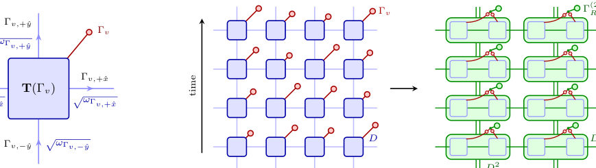
<figcaption class="paper-figure-caption"><b>Fig 3.</b> FIG. 3. Tensor network structure of the syndrome probability. (a) Local tensor T(Γv) at vertex v. Four bond legs carry indices (jv,ˆµ, mv,ˆµ, nv,ˆµ) with bond dimension D = PΓmax. Γ=0 d2 Γ; the “physical” index (red) is postselected on the syndrome Γv. Internally, opposite link pairs fuse into intermediate irreps ℓ± (green dashed), recoupled with Γv; each leg carries a weight √ωΓ with ωΓ = pΓ/dΓ. (b) Full 2D tensor network when measuring local irreps Γv: a boundary MPS evolves along the vertical direction to give P({Γv}) = tr(Q</figcaption>
</figure>
<figure class="paper-figure-card">
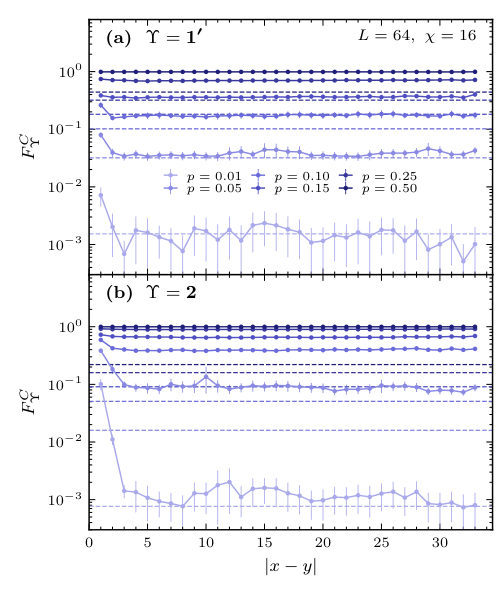
<figcaption class="paper-figure-caption"><b>Fig 4.</b> FIG. 4. S3 sw-SSB. Numerical results for the S3 model ob- tained using the TN representation with open boundary con- ditions from Section VI A. The channel is chosen with p1′ = 0 and p2 = p, and only the local on-site syndrome information is known, i.e., the first level of the hierarchy. The L × L TN is contracted using the boundary MPS method with a finite bond dimension χ = 16. Fidelity correlators (59) (solid lines) for Υ = 1′, 2 in the L = 64 system for various p. Horizontal dashed lines depict the lower bounds from Eq. (50) for the solid lines of the same color.</figcaption>
</figure>
<figure class="paper-figure-card">
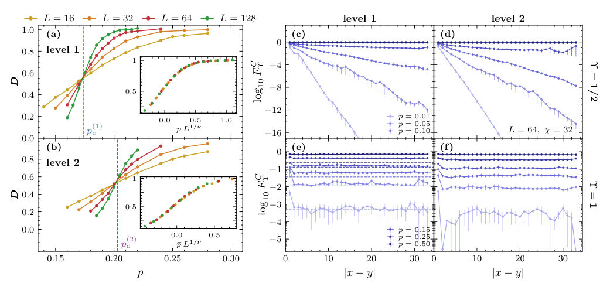
<figcaption class="paper-figure-caption"><b>Fig 5.</b> FIG. 5. SU(2) sw-SSB. Numerical results for the SU(2) model (51) using the boundary MPS contraction of the L × L tensor networks with open boundary conditions. The virtual bond dimensions are χ = 32 for L &gt; 64, and χ = 24 and 32 for L ≤64. Panels (a) and (b): scale-invariant ratio D of the typical correlator defined in Eq. (69). Locations of the crossings correspond to the critical points on each level. Insets: finite-size scaling collapses of D with ν = νRBIM. Panels (c) and (d): fidelity correlators of spin- 1</figcaption>
</figure>
</div>

<p><strong>Summary.</strong> This work introduces an operational method to study spontaneous symmetry breaking in non-Abelian quantum systems by framing it as a decoding problem. The authors derive a hierarchy of statistical models based on measuring fusion outcomes across nested regions. They demonstrate that the symmetry breaking transition is robustly characterized by the center of the group and can be quantified by analyzing the scaling of fidelity correlations.</p>
<p><strong>Why it may be interesting.</strong> It provides a systematic, quantitative framework for understanding how local measurements constrain global symmetries in quantum systems, connecting concepts from topological quantum error correction to critical phenomena.</p>
<details>
<summary>Detailed structure</summary>
<p><strong>Main problem.</strong> The paper develops an operational framework to study strong-to-weak spontaneous symmetry breaking (sw-SSB) in non-Abelian quantum systems.</p>
<p><strong>Main result.</strong> The symmetry breaking is characterized by an ordering transition in the center of the symmetry group, which is measurable via fidelity correlations. The critical threshold for this transition increases as more local fusion outcomes are incorporated into the decoding process.</p>
<p><strong>Method.</strong> The analysis uses statistical mechanics models derived from optimal decoding tasks, formulated as partition functions over fusion outcomes measured on nested regions of a fusion tree.</p>
<p><strong>Model / system.</strong> The model involves non-Abelian mixed states corrupted by decoherence, analyzed using symmetries of groups like $S_3$ and $SU(2)$. The decoding task is dual to distinguishing logical states of the quantum double $D(G)$.</p>
<p><strong>Key observables.</strong> Uhlmann fidelity, fidelity correlations, and the critical probability threshold ($p_c$) for symmetry restoration.</p>
<p><strong>Important parameters / regimes.</strong> The hierarchy level ($N$) of fusion measurements, the symmetry group ($G$), and the error rate ($p$).</p>
<p><strong>Assumptions / limitations.</strong> The optimal measurement protocol must be non-local for non-Abelian symmetries, and the analysis relies on mapping the decoding problem to statistical mechanics partition functions.</p>
<p><strong>Figures summary.</strong> Figures illustrate the fusion tree structure for Abelian vs. Non-Abelian groups, and show finite-size scaling of the correlator ratio $D$ for $SU(2)$ at different hierarchy levels, confirming a $Z_2$ transition.</p>
<p><strong>Paper structure.</strong> The paper establishes the decoding problem, derives the statistical mechanics models for optimal decoding across a hierarchy of measurements, and then applies these tools to $S_3$ and $SU(2)$ to analyze the symmetry breaking transition.</p>
</details>
<details>
<summary>Abstract</summary>
<p>We develop an operational approach to strong-to-weak spontaneous symmetry breaking (sw-SSB) of a non-Abelian symmetry group G. We formulate it as the decoding task of distinguishing two strongly symmetric states that differ by a pair of inserted irreps, after both are corrupted by strongly symmetric decoherence. For finite G, this task is dual to distinguishing logical states of the quantum double D(G) under pure-charge noise. We derive a hierarchy of statistical mechanics models describing optimal decoding from the fusion outcomes measured on successively larger nested regions. As for maximum-likelihood decoders of Abelian codes the measured irreps act as quenched disorder obeying a Nishimori-like condition. Strikingly, because local irreps do not determine how they fuse globally, the strong $G\times G$ symmetry is realized only nonlocally, and irreps trivially charged under Z(G) (the center of G) can hide inside noise-generated ones. As a result, the strong symmetry spontaneously breaks down to Z(G), times the weak symmetry. The only transition at nonzero error rate is then an ordering of the center, whose threshold cannot decrease as the hierarchy is ascended. This conclusion holds at any finite level of the hierarchy for non-nilpotent groups. We confirm these predictions with tensor-network calculations for $S_3$ and SU(2). At the first level, the $S_3$ model, whose center is trivial, shows no transition, and the fidelity correlations of all irreps provably decay to non-zero values. The SU(2) model exhibits a $Z_2$ transition consistent with the Nishimori-Ising universality class, where the fidelity correlations of spin-$1/2$ irreps become long-range. The threshold rises from the first to the second level of the hierarchy by $16\%$. Our results provide a systematic framework for studying non-Abelian sw-SSB and for constructing decoders for non Abelian topological codes.</p>
</details>
<p><sub><a href="#top">↑ back to top</a></sub></p>

<p><a id="paper-2610.06828"></a></p>
<h3 id="the-practical-cost-of-magic-state-cultivation">⭐ <a href="http://arxiv.org/abs/2610.06828v1">The practical cost of magic state cultivation</a></h3>
<p><strong>Highlighted author(s):</strong> Mikhail D. Lukin<br>
<strong>Authors:</strong> Rohan Mehta, Varun Menon, Hengyun Zhou, Mikhail D. Lukin, J. Pablo Bonilla Ataides<br>
<strong>Type:</strong> theory · <strong>Category:</strong> quantum information and computing · <strong>PDF:</strong> <a href="https://arxiv.org/pdf/2610.06828v1">https://arxiv.org/pdf/2610.06828v1</a><br>
<strong>Analysis basis:</strong> full PDF text, analyzed in chunks
<strong>Topic relevance:</strong> <code>quantum measurements</code> <strong>3/5</strong></p>
<div class="figure-strip-hint">↔ Scroll figures horizontally</div>
<div class="paper-figures-scroll">
<figure class="paper-figure-card">
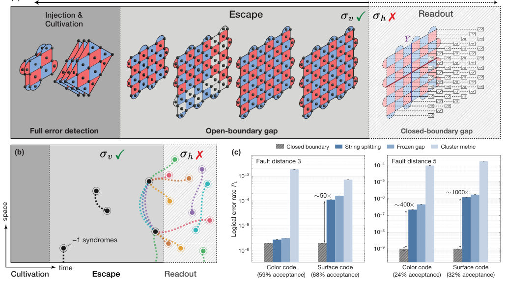
<figcaption class="paper-figure-caption"><b>Fig 1.</b> Figure 1. Magic state cultivation with mid-circuit postselection. (a) Stages of the fold-transversal cultivation protocol on the surface code from Ref. [28], which targets a logical error rate of 2 × 10−6. Full error detection is used in the injection and cultivation stages (left). The escape stage (center) involves growing to a d = 7 surface code and repeating r = 3 rounds of error correction. Readout (right) is depicted by a transversal measurement, though it is more accurately described by a noise-free QEC round, which provides even more information. As readout cannot be performed in practice, access to σh is unphysical; the gap must be predicted from σv alone. (b) A cross-sectional view...</figcaption>
</figure>
<figure class="paper-figure-card">
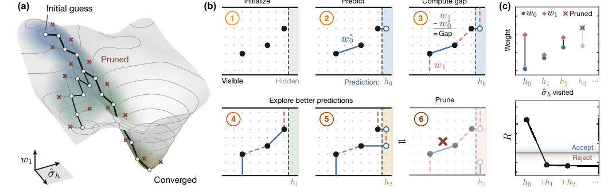
<figcaption class="paper-figure-caption"><b>Fig 2.</b> Figure 2. Overview of Caliper. (a) Caliper builds on top of the complementary gap, which when applied to the open- boundary setting returns an initial guess for the hidden syndrome ˆσh0 and the gap. It then traverses the landscape of other possible hidden syndromes ˆσh to find low-weight complementary corrections, w1, pruning locally suboptimal directions from the search frontier. (b) A step-by-step walkthrough of this process. In steps 1-3, Caliper finds ˆσh0 and its first guess at the gap, w1 −w∗ 0. It then iteratively explores the syndrome space (steps 4-6), preferentially expanding predictions with low w1, until the frontier is exhausted or the expansion limit is reached. (c) The...</figcaption>
</figure>
<figure class="paper-figure-card">
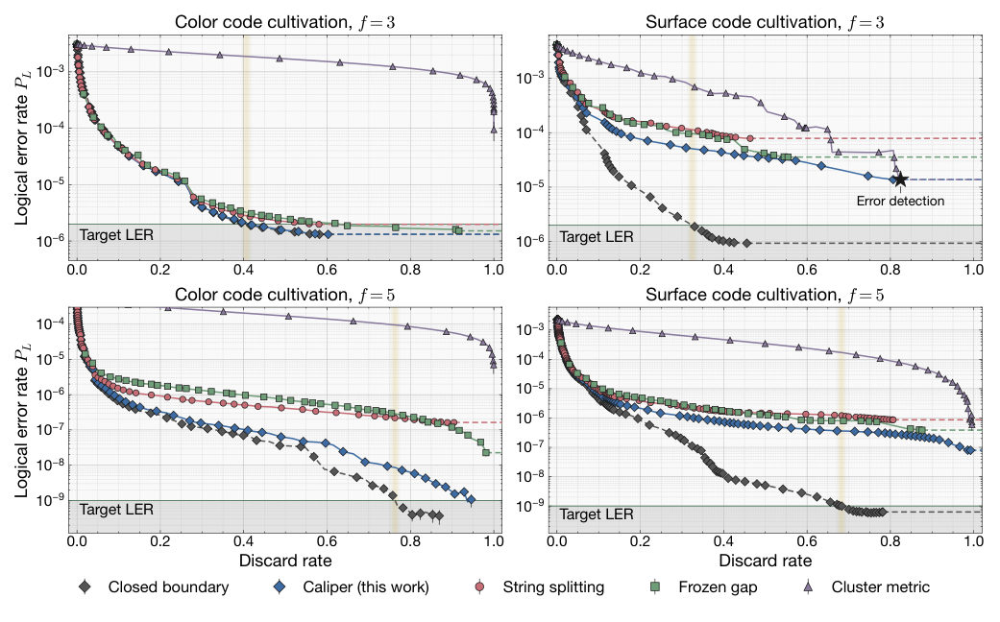
<figcaption class="paper-figure-caption"><b>Fig 3.</b> Figure 3. Achievable suppression of logical error rate with open-boundary postselection. We compare the logical error rate achieved under closed-boundary postselection at a tunable discard rate for the escape stage (gray) with those achieved by various open-boundary postselection protocols, including Caliper (blue), string splitting (red) [48], the frozen gap (green) [49, 54], and cluster-based confidence (purple) [43, 55] for the protocols in Refs. [26, 28, 56]. Target LERs of 2 × 10−6 for fault distance 3 (f = 3) cultivation and 10−9 for distance 5 (f = 5) cultivation are annotated. Our reproduction of closed-boundary postselection matches the data in Refs. [26, 28] to within error bars,...</figcaption>
</figure>
<figure class="paper-figure-card">
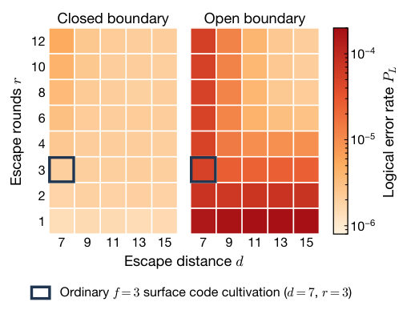
<figcaption class="paper-figure-caption"><b>Fig 4.</b> Figure 4. Logical error rates under various escape stages. The escape distance d and number of escape rounds r parameterize the volume of the escape stage. We evaluate the resulting LERs at 68% escape-stage acceptance fraction, matching the rate reported in Ref. [28] to reach 2 × 10−6 for their f = 3 surface code cultivation protocol. The outlined cells at d = 7, r = 3 correspond to the escape stage circuit proposed therein.</figcaption>
</figure>
<figure class="paper-figure-card">
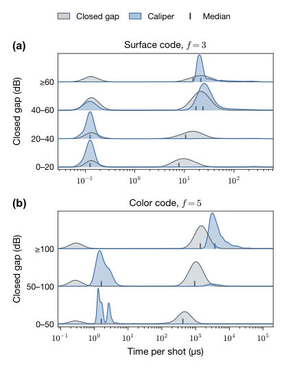
<figcaption class="paper-figure-caption"><b>Fig 5.</b> Figure 5. Thresholded postselection latency. Distribu- tions of the time per shot for the closed-boundary complemen- tary gap (gray) and Caliper (blue), grouped by the closed- boundary gap, for (a) f = 3 surface code cultivation and (b) f = 5 color code cultivation. Both methods determine whether their score meets an acceptance threshold. Vertical marks indicate the median within each group.</figcaption>
</figure>
</div>

<p><strong>Summary.</strong> This work tackles the practical limitations of magic state cultivation by developing the Caliper decoder, which uses only mid-circuit syndrome measurements. It demonstrates that while Caliper significantly improves performance over naive methods, the achievable error rates and resource costs differ substantially from idealized theoretical estimates. This highlights the critical impact of measurement constraints on quantum computation design.</p>
<p><strong>Why it may be interesting.</strong> The focus on open-boundary syndrome measurements and the development of a practical, low-latency decoder like Caliper provides crucial, realistic constraints for designing fault-tolerant quantum computation protocols.</p>
<details>
<summary>Detailed structure</summary>
<p><strong>Main problem.</strong> The paper addresses the challenge of developing efficient postselection protocols for magic state cultivation when only nondestructive, mid-circuit syndrome information is available, unlike idealized theoretical models.</p>
<p><strong>Main result.</strong> A novel decoder, Caliper, substantially outperforms existing heuristics by leveraging available syndrome information, though a performance tradeoff exists compared to ideal closed-boundary measurements.</p>
<p><strong>Method.</strong> The authors develop and analyze the Caliper decoder, which approximates the likelihood of logical error by searching the hidden syndrome space using minimum-weight matching techniques.</p>
<p><strong>Model / system.</strong> The context is magic state cultivation, a process used to generate high-fidelity non-Clifford resource states essential for fault-tolerant quantum computation, modeled using surface and color codes.</p>
<p><strong>Key observables.</strong> Logical error rate ($P_L$), spacetime volume (resource overhead), and the achievable suppression factor of the error rate.</p>
<p><strong>Important parameters / regimes.</strong> Fault distance ($f=3, 5$), physical error rate ($p=10^{-3}$), and the degree of postselection (discard rate).</p>
<p><strong>Assumptions / limitations.</strong> The core assumption is that the decoder must operate using only nondestructive mid-circuit syndrome information ($\sigma_v$) at the time of decision (open-boundary postselection).</p>
<p><strong>Figures summary.</strong> Figures illustrate the stages of cultivation comparing open-boundary vs. closed-boundary postselection, and show quantitative comparisons of achievable logical error rates and resource volumes for different code types.</p>
<p><strong>Paper structure.</strong> The paper progresses from identifying the limitations of existing resource estimates (assuming noiseless measurements) to proposing Caliper, detailing its mechanism, and finally presenting quantitative comparisons showing its performance relative to closed-boundary and other heuristic protocols.</p>
</details>
<details>
<summary>Abstract</summary>
<p>Magic state cultivation is a promising method for preparing high-fidelity non-Clifford resource states - a central component of fault-tolerant quantum computing - with low spacetime overhead. In benchmarking cultivation, existing resource estimates assume access to noiseless transversal measurement of the output magic state to allow for postselection during the final escape stage of the cultivation process. However, such measurements would destroy the magic state and are therefore unavailable during computation. We develop an open-boundary postselection method, Caliper, that uses only nondestructive mid-circuit syndrome information and substantially outperforms existing methods operating under these constraints. In some regimes, our postselection method uniquely recovers the resource efficiency of prior estimates. However, in other cases, we observe a tradeoff. At spacetime costs reported in previous works, the achievable logical error rates can be orders of magnitude higher, and recovering the reported logical error rate requires substantially larger codes and longer escape stages. Our results highlight how practical considerations involving mid-circuit postselection can impact the design and performance of magic state cultivation protocols.</p>
</details>
<p><sub><a href="#top">↑ back to top</a></sub></p>

<p><a id="paper-2610.06749"></a></p>
<h3 id="efficient-logic-with-ultra-high-rate-quantum-codes">⭐ <a href="http://arxiv.org/abs/2610.06749v1">Efficient Logic with Ultra-High-Rate Quantum Codes</a></h3>
<p><strong>Highlighted author(s):</strong> Mikhail D. Lukin<br>
<strong>Authors:</strong> Nishad Maskara, Rohan Mehta, Zhiyang He, Varun Menon, J. Pablo Bonilla Ataides, Mikhail D. Lukin, Hengyun Zhou<br>
<strong>Type:</strong> theory · <strong>Category:</strong> quantum information and computing · <strong>PDF:</strong> <a href="https://arxiv.org/pdf/2610.06749v1">https://arxiv.org/pdf/2610.06749v1</a><br>
<strong>Analysis basis:</strong> full PDF text, analyzed in chunks</p>
<div class="figure-strip-hint">↔ Scroll figures horizontally</div>
<div class="paper-figures-scroll">
<figure class="paper-figure-card">
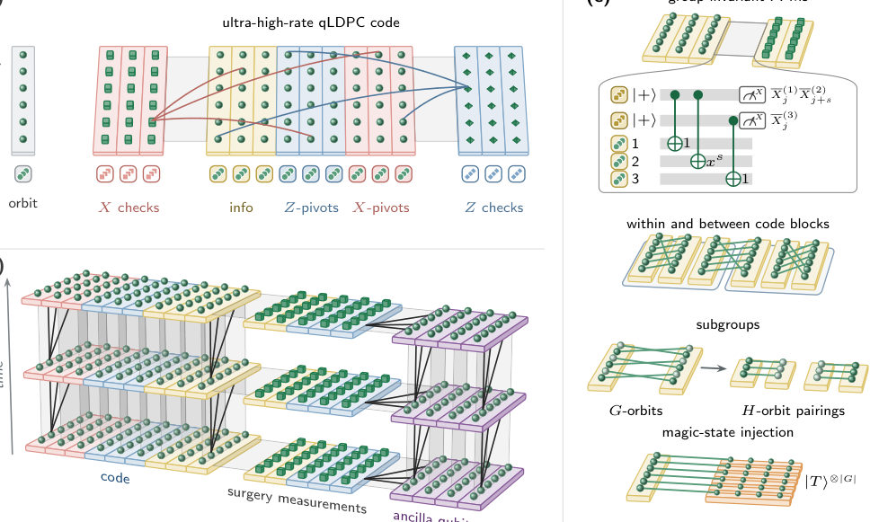
<figcaption class="paper-figure-caption"><b>Fig 1.</b> FIG. 1. Efficient parallel logical operations with ultra-high-rate qLDPC codes. (a) Illustration of a qLDPC code organized by its group symmetry G, with each bar representing one orbit of qubits or checks. The data qubits are divided into three roles based on the logical standard form: the information coordinates (yellow), and Z- and X-stabilizer pivot coordinates (blue and red). Logical operators are specified by a single information coordinates and completed on the complementary pivot coordinates. Lines indicate the qubits involved in an example X and Z checks; most connections are omitted for clarity. (b) Illustration of the spacetime surgery construction. Ancillary qubits and additional...</figcaption>
</figure>
<figure class="paper-figure-card">
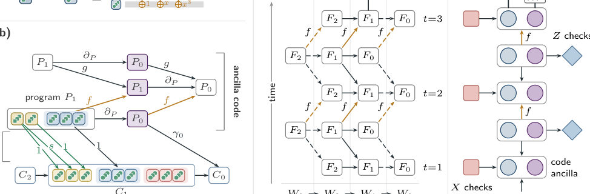
<figcaption class="paper-figure-caption"><b>Fig 2.</b> FIG. 2. Programming and protecting parallel logical measurements. (a) Chain-map convolution between a check orbit and a qubit orbit. An identity connection corresponds to one layer of transversal CNOTs, and a non-trivial scalar like f = 1 + x + x3 corresponds to three transversal CNOTs with relative cyclic shifts of zero, one, and three positions respectively. (b) Ancilla system for parallel logical measurements. The complex P1 →P0 is attached to the data code through γ1 and γ0. Yellow orbits specify the measurements in Fig. 1(c), while blue pivot coordinates complete the logical operators. Additional copies are introduced and coupled through f and g to increase the distance, with the...</figcaption>
</figure>
<figure class="paper-figure-card">
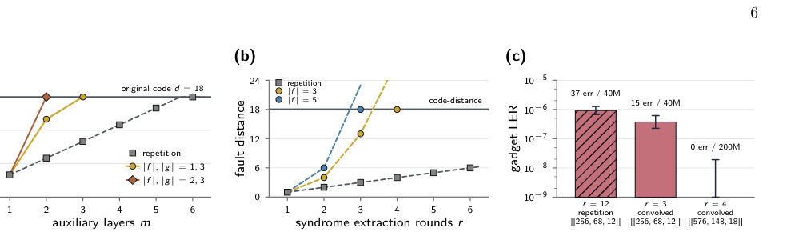
<figcaption class="paper-figure-caption"><b>Fig 3.</b> FIG. 3. Simulation results. (a) Merged-code distance dX versus the number of auxiliary layers m for the [[576, 148, 18]] code. Each layer includes one primal–dual pair. Repetition (grey squares) results in spatial distance dX = min(3m + 1, 18) (dashed). Convolution instead reaches distance with three layers for (|f|, |g|) = (1, 3) (yellow circles), or just two layers for (2, 3) (red diamond), where f and g are as labeled in Fig. 2(b). (b) Temporal distance versus measurement rounds r for readout of the same code. Repetition gives dZ = r (grey squares). Convolved profiles with temporal coupling weights (1, 3) and (1, 5) reach dZ = 18 in four and three rounds, respectively (yellow and blue...</figcaption>
</figure>
<figure class="paper-figure-card">
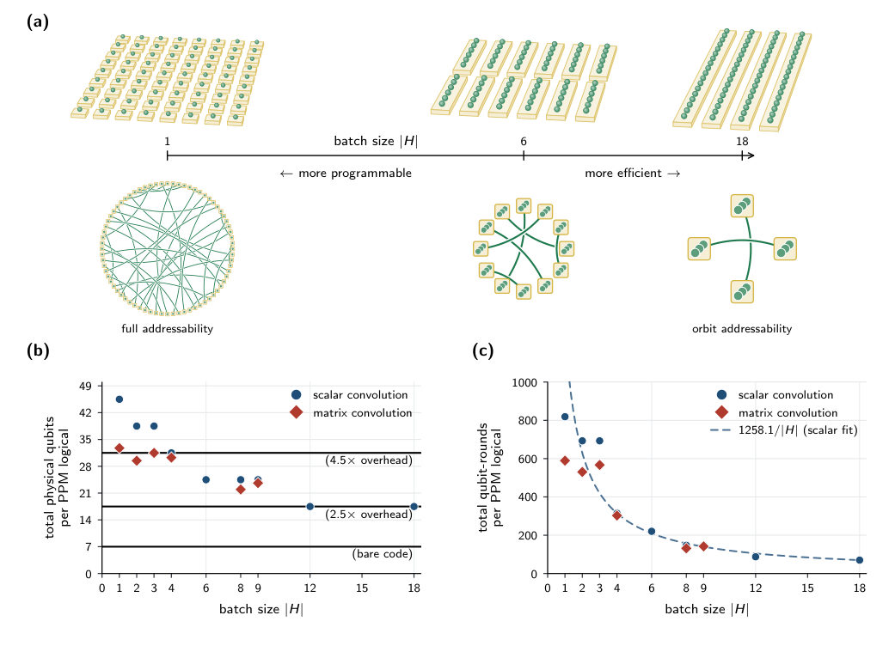
<figcaption class="paper-figure-caption"><b>Fig 4.</b> FIG. 4. Trade-off between programmability and overhead. (a) Subgroup control for 72 parallel pairwise Pauli-product measurements on 144 logical qubits of the [[576, 148, 18]] code. Each measurement is repeated across a subgroup orbit of size |H|, giving 72/|H| independently programmable pairwise measurements. Smaller subgroups provide finer orbit addressability, reaching full addressability with all measurements independently programmable at |H| = 1. (b) Space overhead per participating logical qubit for scalar convolution (blue circles) and matrix convolution with ancillary qubits and check-weight reduction (red diamonds). Both preserve the subgroup symmetry. Each point gives the largest...</figcaption>
</figure>
<figure class="paper-figure-card">
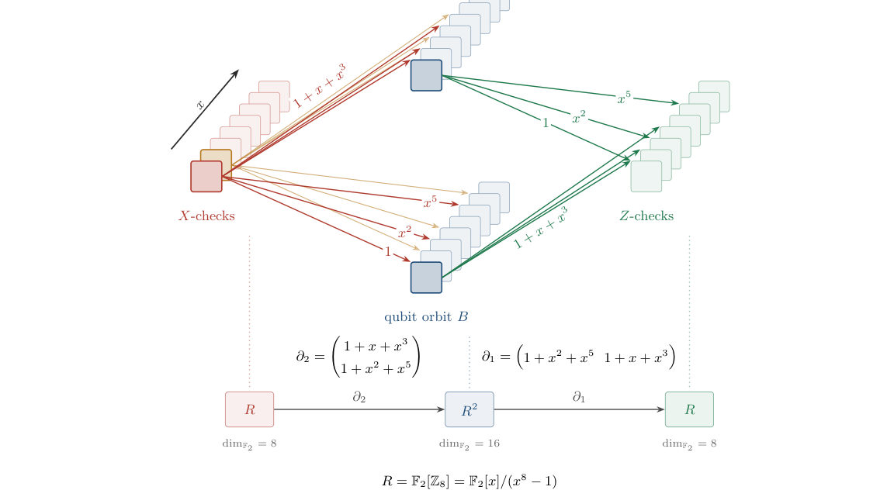
<figcaption class="paper-figure-caption"><b>Fig 5.</b> FIG. 5. A Z8-symmetric CSS complex before and after orbit compression. Each stack contains one basis element for every group element, and multiplication by x moves one step through a stack. The highlighted X-check and its translate have the same support pattern. The lower row represents the same 16-qubit complex using one R-coordinate per orbit.</figcaption>
</figure>
</div>

<p><strong>Summary.</strong> This paper introduces novel, efficient methods for performing logical computations on high-rate quantum error-correcting codes using qLDPC codes. By exploiting group symmetries and developing techniques like chain-map convolution, the authors drastically reduce the required space and time overheads for fault tolerance. This work paves the way for more resource-efficient quantum computing architectures.</p>
<p><strong>Why it may be interesting.</strong> The focus on structured parallelism and systematic overhead reduction in fault-tolerant quantum computation is highly relevant to building scalable quantum hardware architectures.</p>
<details>
<summary>Detailed structure</summary>
<p><strong>Main problem.</strong> The paper addresses the need for fast and parallel logical computation methods within ultra-high-rate quantum low-density parity-check (qLDPC) codes to significantly reduce the qubit overhead associated with fault tolerance.</p>
<p><strong>Main result.</strong> The proposed methods achieve efficient logic with low spacetime overhead, requiring only $\sim 2.5	imes$ space overhead and $3-4$ rounds of syndrome extraction for case studies.</p>
<p><strong>Method.</strong> The approach leverages group symmetries to partition logical qubits into orbits and applies parallel surgery methods, notably introducing 'chain-map convolution' to boost spatial and temporal distances efficiently.</p>
<p><strong>Model / system.</strong> The work focuses on quantum low-density parity-check (qLDPC) codes, particularly those with ultra-high encoding rates, and utilizes algebraic structures like group symmetries and chain complexes for analysis.</p>
<p><strong>Key observables.</strong> Space overhead, time overhead, logical parallelism, and the ability to perform programmable logical Pauli-product measurements (PPMs).</p>
<p><strong>Important parameters / regimes.</strong> Code parameters such as [[256, 68, 12]] and [[576, 148, 18]], and the trade-off between logical control and spacetime resources.</p>
<p><strong>Assumptions / limitations.</strong> The efficiency gains rely heavily on exploiting the underlying group structure and structured parallelism within the code design.</p>
<p><strong>Figures summary.</strong> Figures illustrate the organization of qLDPC codes via group symmetry orbits, the construction of spacetime surgery using chain-map convolution, and examples of logical operations (PPMs) within code blocks.</p>
<p><strong>Paper structure.</strong> The paper systematically develops methods by first using group symmetries for parallel measurements, then introducing chain-map convolution to reduce overhead, and finally extending programmability through subgroup restrictions to analyze resource trade-offs.</p>
</details>
<details>
<summary>Abstract</summary>
<p>Quantum low-density parity-check (qLDPC) codes offer a promising route to reducing the qubit overhead of fault tolerance, with recent ultra-high-rate constructions achieving encoding rates above one half. In this work, we develop fast and parallel logical computation methods for ultra-high-rate codes. We first utilize the group symmetries of the codes to partition the logical qubits into orbits, and then apply parallel surgery methods to implement group-invariant collections of logical Pauli-product measurements. These measurements are highly programmable, as we may arbitrarily couple logical orbits as long as each measurement is repeated across the whole orbit(s). To reduce the space and time overheads, we develop a technique called chain-map convolution, which uses the group structure to boost both the spatial and temporal distances of our protocol in a highly efficient manner. As case studies, we construct distance-preserving parallel measurement gadgets for the [[256, 68, 12]], [[576, 148, 18]] pair-partition codes, and a [[1152, 580, 12]] rate-$1/2$ code, with only around $2.5\times$ space overhead and 3-4 rounds of syndrome extraction each. The same methods also enable parallel injection of cultivated magic states into high-rate codes. Finally, we extend programmability through subgroup restrictions, revealing a tradeoff between logical control and the spacetime resources required for fault tolerance and highlighting the crucial role structured parallelism plays in reducing overhead. These results provide new methods for designing qLDPC logical operations with low spacetime overhead, opening a route toward more efficient fault-tolerant quantum architectures.</p>
</details>
<p><sub><a href="#top">↑ back to top</a></sub></p>

<p><a id="paper-2610.05035"></a></p>
<h3 id="process-tensor-simulations-of-non-markovian-open-quantum-systems-with-large-uncoupled-subspaces"><a href="http://arxiv.org/abs/2610.05035v1">Process tensor simulations of non-Markovian open quantum systems with large uncoupled subspaces</a></h3>
<p><strong>Authors:</strong> Thomas K. Bracht, Moritz Cygorek<br>
<strong>Type:</strong> theory · <strong>Category:</strong> other · <strong>PDF:</strong> <a href="https://arxiv.org/pdf/2610.05035v1">https://arxiv.org/pdf/2610.05035v1</a><br>
<strong>Analysis basis:</strong> full PDF text, analyzed in chunks
<strong>Topic relevance:</strong> 🔥 <code>methods for driven-dissipative</code> <strong>5/5</strong> · <code>Tavis-Cummings &amp; cavity-many-emitter</code> <strong>3/5</strong> · <code>correlated / nonlocal dissipation</code> <strong>3/5</strong> · <code>analog quantum simulation</code> <strong>2/5</strong> · <code>driven-dissipative phase transition</code> <strong>2/5</strong> · <code>Keldysh / 2PI / non-Gaussian methods</code> <strong>1/5</strong> · <code>non-equilibrium universality</code> <strong>1/5</strong> · <code>quantum measurements</code> <strong>1/5</strong></p>
<div class="figure-strip-hint">↔ Scroll figures horizontally</div>
<div class="paper-figures-scroll">
<figure class="paper-figure-card">
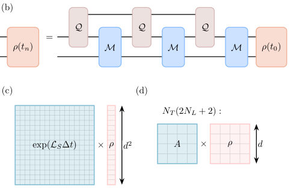
<figcaption class="paper-figure-caption"><b>Fig 1.</b> FIG. 1. (a) Non-Markovian open quantum system simulation using PT-MPOs. (b) PT-MPO simulation with an additional system subspace not directly coupled to the environment. (c) In Liouville space, the propagation is done by multiplication with a d2 × d2 matrix. (d) Using the Taylor method, this can be replaced with NT (2NL + 2) matrix multiplications, where A = HS, Li, L† i, L† iLi is multiplied to ρ from left or right according to Eq. (5).</figcaption>
</figure>
<figure class="paper-figure-card">
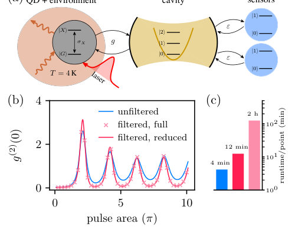
<figcaption class="paper-figure-caption"><b>Fig 2.</b> FIG. 3. (a) Two-level system coupled to photonic cavity, which is coupled to two sensor systems allowing to calculate frequency filtered correlations. The total system has a Hilbert space with d = 24. (b) Calculated g(2)(0) for TLS coupled to LA phonons at 4 K under pulsed excitation with varying pulse area, with and without spectral filtering. Red crosses mark data points where all TLS, cavity and sensor states are taken into account, while the red line shows data where only states with a maximum of two total excitations were considered, leading to d = 12. (c) Histogram showing the runtime of the corresponding simulations for a single data point.</figcaption>
</figure>
<figure class="paper-figure-card">
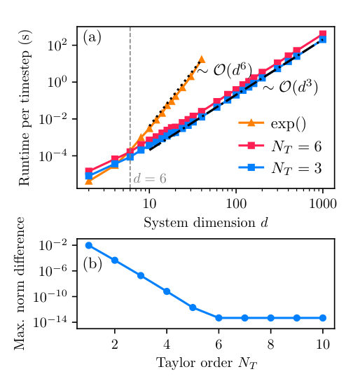
<figcaption class="paper-figure-caption"><b>Fig 3.</b> FIG. 2. (a) Benchmark of runtime using TLS coupled to single cavity mode with increasing number of cavity photons accounted for, leading to a total dimension d. (b) Maximum norm difference of density matrix depending on Taylor order NT compared to usage of exp(), for resonant excitation and subsequent relaxation of two-level system coupled to phonons at dt = 0.1 ps. Simulations are run on a single core of an Intel Core Ultra 9 285K Processor at factory settings.</figcaption>
</figure>
</div>

<p><strong>Summary.</strong> This paper presents an advanced computational technique to simulate open quantum systems by combining Process Tensor methods with a Taylor series expansion. This combination overcomes the severe computational scaling limitations of previous methods, enabling efficient simulations for systems with hundreds of states. It is highly relevant for modeling complex quantum devices like cavity-QED systems.</p>
<p><strong>Why it may be interesting.</strong> This work provides a crucial computational tool for simulating complex, realistic quantum optical and solid-state systems where non-Markovian effects and large Hilbert spaces are present, pushing the boundaries of what is numerically tractable.</p>
<details>
<summary>Detailed structure</summary>
<p><strong>Main problem.</strong> The paper addresses the computational bottleneck in simulating the temporal evolution and multi-time correlations of non-Markovian open quantum systems, especially when the system possesses large uncoupled subspaces.</p>
<p><strong>Main result.</strong> By combining Process Tensor simulations with a Taylor expansion method, the numerical complexity is drastically reduced from prohibitively high scaling (e.g., $O(d^6)$) down to an efficient $O(d^3)$ scaling.</p>
<p><strong>Method.</strong> The core method involves representing the environment's influence using Process Tensors in the Matrix Product Operator Representation (PT-MPOs) and then employing a Taylor series expansion to approximate the time evolution operator, avoiding direct large-scale matrix exponentiation.</p>
<p><strong>Model / system.</strong> The work is applicable to general open quantum systems, with specific examples including solid-state cavity-QED systems (e.g., a two-level system coupled to LA phonons in a microcavity) and systems requiring spectral filtering via sensor coupling.</p>
<p><strong>Key observables.</strong> Temporal evolution of the density matrix $
ho(t)$, and multi-time correlation functions, such as the two-time correlation function $g^{(2)}(t, 	au)$.</p>
<p><strong>Important parameters / regimes.</strong> The efficiency improvement is significant for system dimensions $d \gtrsim 6$, and the accuracy is controlled by the Taylor expansion order $N_T$.</p>
<p><strong>Assumptions / limitations.</strong> The method assumes that the non-Markovian environment couples only to a small subspace, allowing for the efficient separation of the system dynamics.</p>
<p><strong>Figures summary.</strong> Figures illustrate the simulation process, comparing direct exponentiation versus the Taylor method for runtime benchmarks, and showing the setup and results for calculating $g^{(2)}(t, 	au)$ in cavity-QED systems.</p>
<p><strong>Paper structure.</strong> The paper introduces the PT-MPO framework for open systems, identifies the scaling bottleneck, and then details the combination of this framework with the Taylor expansion method to achieve polynomial scaling in system dimension, demonstrating its application to specific cavity-QED models.</p>
</details>
<details>
<summary>Abstract</summary>
<p>Process tensors in matrix product operator representation (PT-MPOs) are a powerful tool to calculate the temporal evolution and multi-time correlations of open quantum systems. While much progress has been made in making the calculation of process tensors for larger system dimensions possible, the numerical cost of the subsequent propagation of the system typically scales as $\mathcal{O}(d^6)$, which renders PT-MPO methods prohibitively expensive for system dimensions above several dozens. Here, we show how PT-MPO methods can be used efficiently when only some of the system states couple to the environment, and how combination with a Taylor expansion method allows for a reduction of the numerical complexity down to $\mathcal{O}(d^3)$. We show that these methods enable efficient simulations of systems with several hundreds of states. This is particularly relevant for solid-state cavity-QED systems with multiple modes, or when calculating frequency-filtered correlation functions by coupling sensor systems to the system of interest.</p>
</details>
<p><sub><a href="#top">↑ back to top</a></sub></p>

<p><a id="paper-2610.05288"></a></p>
<h3 id="fast-random-compilers-for-time-dependent-and-time-independent-lindbladian-simulation"><a href="http://arxiv.org/abs/2610.05288v1">Fast Random Compilers for Time-Dependent and Time-Independent Lindbladian Simulation</a></h3>
<p><strong>Authors:</strong> Youngjin Seo, Dhrumil Patel, Hyukjoon Kwon, Mark M. Wilde<br>
<strong>Type:</strong> theory · <strong>Category:</strong> quantum information and computing · <strong>PDF:</strong> <a href="https://arxiv.org/pdf/2610.05288v1">https://arxiv.org/pdf/2610.05288v1</a><br>
<strong>Analysis basis:</strong> full PDF text, analyzed in chunks
<strong>Topic relevance:</strong> 🔥 <code>methods for driven-dissipative</code> <strong>5/5</strong> · <code>correlated / nonlocal dissipation</code> <strong>3/5</strong> · <code>driven-dissipative phase transition</code> <strong>3/5</strong> · <code>Keldysh / 2PI / non-Gaussian methods</code> <strong>2/5</strong> · <code>non-equilibrium universality</code> <strong>2/5</strong> · <code>analog quantum simulation</code> <strong>1/5</strong> · <code>quantum measurements</code> <strong>1/5</strong></p>
<div class="figure-strip-hint">↔ Scroll figures horizontally</div>
<div class="paper-figures-scroll">
<figure class="paper-figure-card">
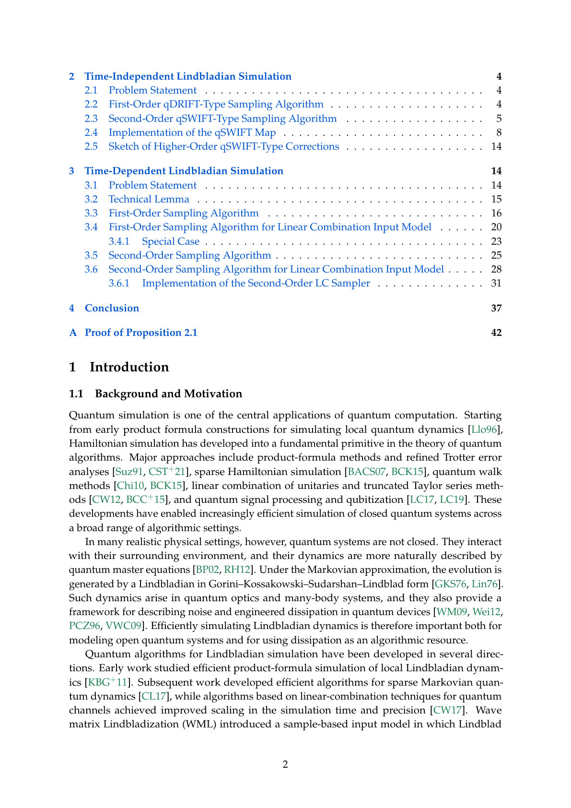
<figcaption class="paper-figure-caption"><b>Fig 1.</b> Low-resolution page preview, page 2</figcaption>
</figure>
<figure class="paper-figure-card">
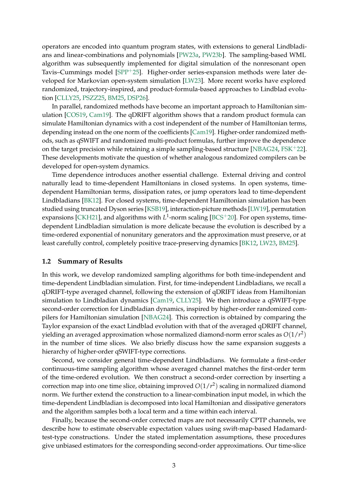
<figcaption class="paper-figure-caption"><b>Fig 2.</b> Low-resolution page preview, page 3</figcaption>
</figure>
<figure class="paper-figure-card">
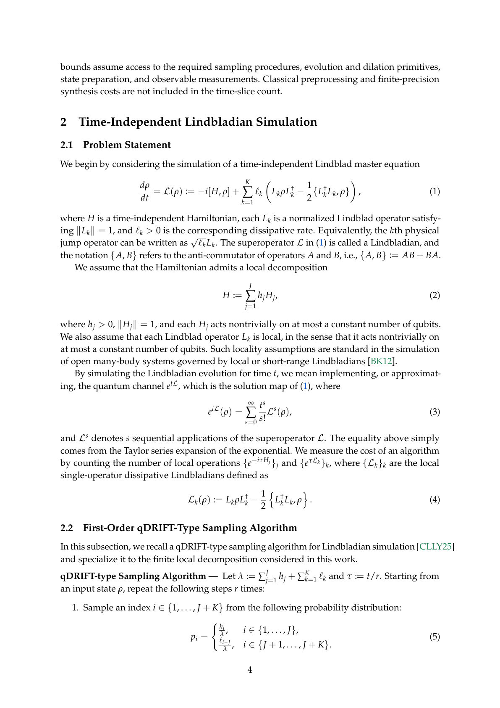
<figcaption class="paper-figure-caption"><b>Fig 3.</b> Low-resolution page preview, page 4</figcaption>
</figure>
<figure class="paper-figure-card">
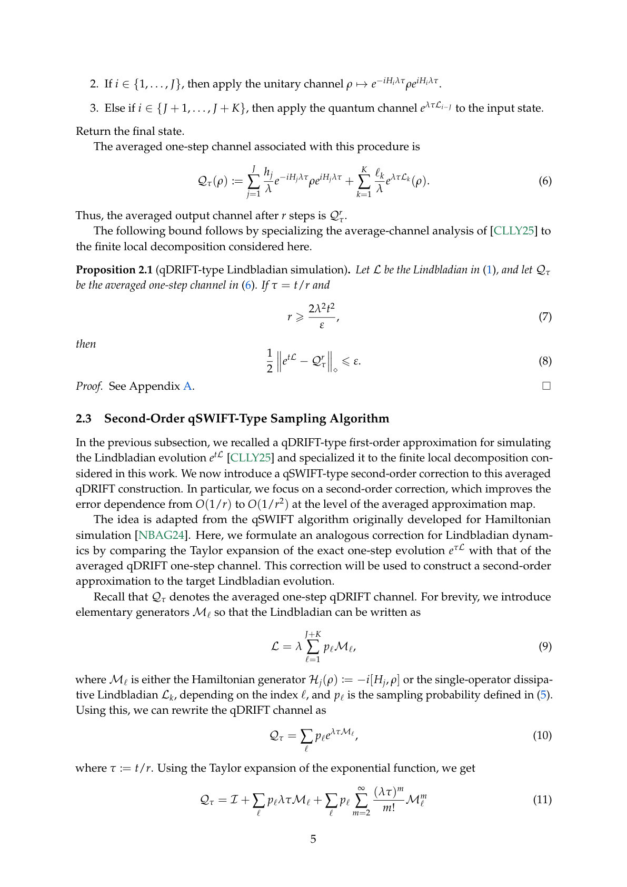
<figcaption class="paper-figure-caption"><b>Fig 4.</b> Low-resolution page preview, page 5</figcaption>
</figure>
<figure class="paper-figure-card">
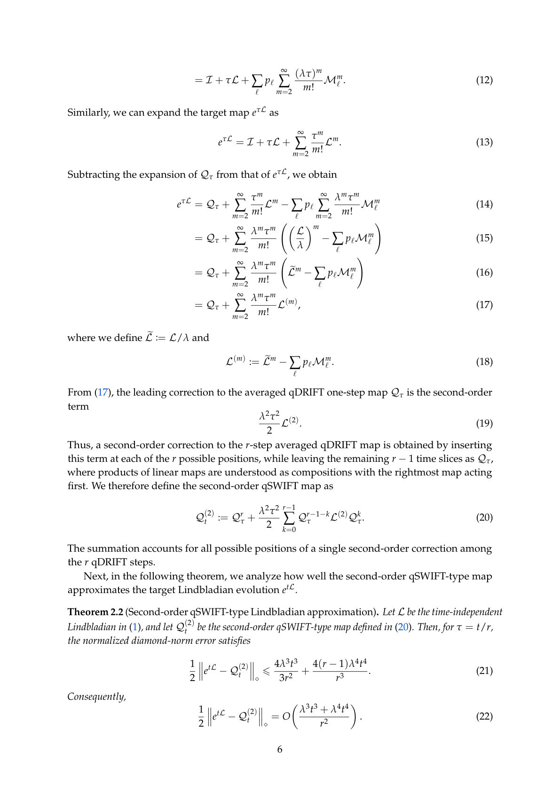
<figcaption class="paper-figure-caption"><b>Fig 5.</b> Low-resolution page preview, page 6</figcaption>
</figure>
</div>

<p><strong>Summary.</strong> This paper presents advanced randomized sampling algorithms to simulate Lindbladian evolution for open quantum systems. By developing second-order corrections to established methods, the authors achieve superior convergence rates for both time-independent and time-dependent dynamics. This provides a powerful, resource-efficient tool for simulating complex quantum processes beyond simple Hamiltonian evolution.</p>
<p><strong>Why it may be interesting.</strong> This work provides highly efficient, high-order numerical techniques for simulating open quantum dynamics, which is crucial for modeling realistic quantum devices and open quantum systems in AMO physics.</p>
<details>
<summary>Detailed structure</summary>
<p><strong>Main problem.</strong> The paper addresses the challenge of efficiently simulating the time evolution of open quantum systems governed by Lindbladian master equations.</p>
<p><strong>Main result.</strong> They develop second-order randomized sampling algorithms for both time-independent and time-dependent Lindbladian dynamics, significantly improving the convergence rate compared to first-order methods.</p>
<p><strong>Method.</strong> The core method involves extending randomized product formulas (like qDRIFT and qSWIFT) to the Lindbladian framework, utilizing second-order corrections and developing continuous-time sampling techniques.</p>
<p><strong>Model / system.</strong> The system models open quantum systems whose dynamics are described by Lindbladian master equations, $d
ho/dt = L(
ho)$. The simulation handles both time-independent and general time-dependent Lindbladians, often assuming local decompositions for the generators.</p>
<p><strong>Key observables.</strong> The primary observable is the expectation value of an observable $G$, and the error is quantified using the normalized diamond-norm error.</p>
<p><strong>Important parameters / regimes.</strong> Key parameters include the total simulation time $t$, the target precision $\epsilon$, and the structure parameter $\lambda$ related to the Lindbladian coefficients.</p>
<p><strong>Assumptions / limitations.</strong> The work relies on the applicability of randomized sampling techniques, the ability to estimate expectation values even when the corrected maps are not CPTP, and specific convergence bounds derived from norm properties.</p>
<p><strong>Paper structure.</strong> The paper is structured by first detailing the time-independent Lindbladian simulation using qDRIFT and qSWIFT corrections, followed by an extension to general time-dependent Lindbladians, including methods for linear-combination input models.</p>
</details>
<details>
<summary>Abstract</summary>
<p>Randomized product formulas provide simple and flexible methods for quantum simulation. While qDRIFT-type randomized simulation has been extended to Lindbladian dynamics, higher-order randomized compilers have primarily been developed for Hamiltonian simulation. In this work, we develop first- and second-order randomized sampling algorithms for Lindbladian simulation in both the time-independent and time-dependent settings. Building on first-order qDRIFT-type Lindbladian simulation, we introduce a qSWIFT-type second-order correction for time-independent Lindbladians with a finite local decomposition. For $λt \geq 1$, where $λ$ is the sum of the Hamiltonian coefficients and dissipative rates, the resulting approximation achieves normalized diamond-norm error at most $\varepsilon$ using $r=O(λ^2 t^2/\sqrt{\varepsilon})$ time slices, improving the $\varepsilon^{-1}$ precision dependence of the first-order qDRIFT-type approximation. We then develop first- and second-order continuous-time sampling algorithms for general time-dependent Lindbladians, with the second-order construction likewise achieving an $\varepsilon^{-1/2}$ dependence on the target precision in the number of time slices. We further extend the time-dependent construction to a linear-combination input model over local Hamiltonian and dissipative generators, allowing the randomized sampler to be formulated in terms of local evolutions rather than the full time-dependent Lindbladian. Because the second-order corrected maps need not be CPTP, we use them to estimate observable expectation values rather than to deterministically prepare output states.</p>
</details>
<p><sub><a href="#top">↑ back to top</a></sub></p>

<p><a id="paper-2610.06709"></a></p>
<h3 id="out-of-control-hamiltonian-learning"><a href="http://arxiv.org/abs/2610.06709v1">Out-of-control Hamiltonian Learning</a></h3>
<p><strong>Authors:</strong> Weiyuan Gong, Muzhou Ma, Sitan Chen, Jordan Cotler, Hsin-Yuan Huang<br>
<strong>Type:</strong> theory · <strong>Category:</strong> other · <strong>PDF:</strong> <a href="https://arxiv.org/pdf/2610.06709v1">https://arxiv.org/pdf/2610.06709v1</a><br>
<strong>Analysis basis:</strong> full PDF text, analyzed in chunks
<strong>Topic relevance:</strong> 🔥 <code>analog quantum simulation</code> <strong>5/5</strong> · <code>Rydberg arrays</code> <strong>3/5</strong> · <code>quantum measurements</code> <strong>3/5</strong></p>
<div class="figure-strip-hint">↔ Scroll figures horizontally</div>
<div class="paper-figures-scroll">
<figure class="paper-figure-card">
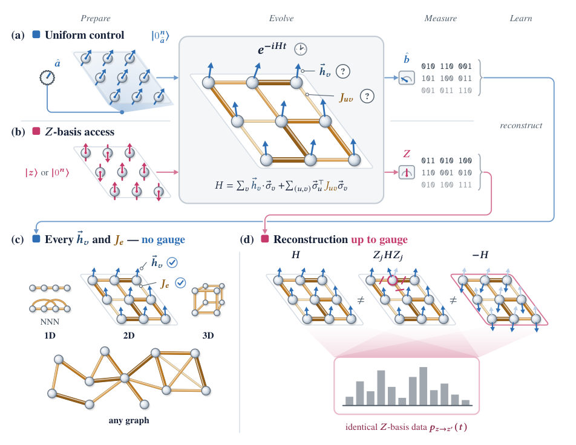
<figcaption class="paper-figure-caption"><b>Fig 1.</b> Figure 1: (a) Uniform control ( ˆ𝑎-to-ˆ𝑏model): all qubits are prepared along one common direction ˆ𝑎, |0𝑛 ˆ𝑎⟩= (𝑈|0⟩)⊗𝑛, and measured along one common direction ˆ𝑏. (b) 𝑍-basis access (𝑍-to-𝑍′ model; 0-to-𝑍′ for |0𝑛⟩input): the qubits start in a computational basis state |𝑧⟩and are measured in the computational basis. (c) From the data of (a), all parameters can be learned, for any interaction graph. (d) From the data of (b), a generic NN IXZ Hamiltonian on a 1D chain or square lattice can be learned up to unavoidable Pauli-𝑍conjugation and time-reversal gauges.</figcaption>
</figure>
<figure class="paper-figure-card">
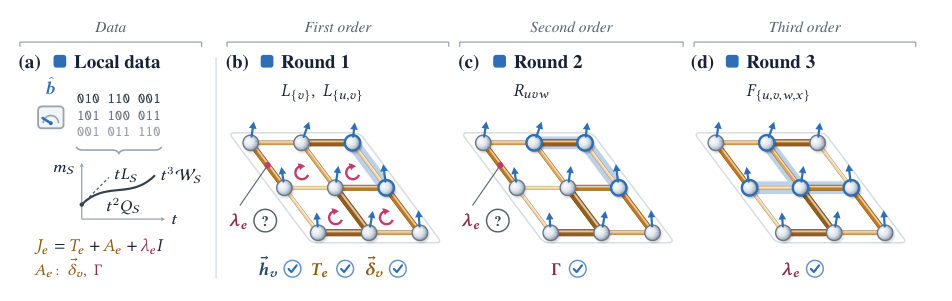
<figcaption class="paper-figure-caption"><b>Fig 2.</b> Figure 2: Three-round reconstruction under uniform control. (a) Local data: Taylor coefficients 𝐿𝑆, 𝑄𝑆and W𝑆 (orders one to three) of the Fourier coefficients 𝑚ˆ𝑎, ˆ𝑏 𝑆 (𝑡) on sets 𝑆of at most four sites, with 𝐽𝑒= 𝑇𝑒+ 𝐴𝑒+ 𝜆𝑒𝐼for 𝐴𝑒= [d𝑒]×. (b)–(d): checks denote what is learned in that round, crimson and question marks denote the remaining ambiguities. (b) Round 1: first-order data identifies 𝑇𝑒, h𝑣, as well as 𝐴𝑒up to a global curl gauge. (c) Round 2: Second-order terms 𝑅𝑢𝑣𝑤of three-site cumulants determine the skew-symmetric components 𝐴𝑒for edges on induced paths. For the remaining edges, we use observables adapted to the local graph structure (see Figure 6). (d) Round 3: Third-order...</figcaption>
</figure>
<figure class="paper-figure-card">
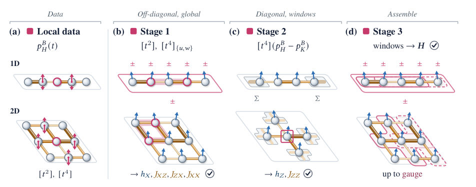
<figcaption class="paper-figure-caption"><b>Fig 3.</b> Figure 3: Local reconstruction of a generic NN IXZ Hamiltonian from 𝑍-to-𝑍′ data. (a) For transitions that flip the marked site (ring), vary the neighboring input bits (double arrows) and extract the second- and fourth-order coefficients of the local transition probabilities 𝑝𝑧→𝑧′ (𝑡). (b) Stage 1: Second-order data recover each transverse field and its incident mixed couplings up to a common site sign (±). Fourth-order tests on nonadjacent pairs resolve the chain-endpoint ambiguities and determine relative 𝐽𝑋𝑋signs along the shaded paths, leaving one common sign. (c) Stage 2: Subtracting the fourth-order contribution from evolution under the recovered off-diagonal Hamiltonian 𝐾gives local...</figcaption>
</figure>
<figure class="paper-figure-card">
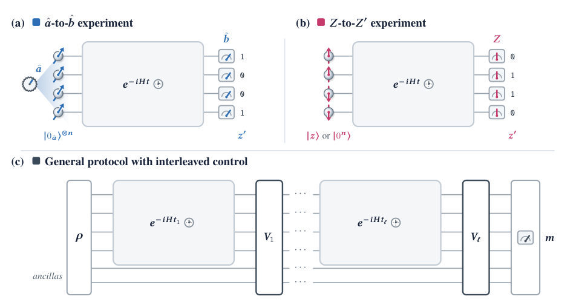
<figcaption class="paper-figure-caption"><b>Fig 4.</b> Figure 4: Experimental access to the unknown Hamiltonian 𝐻. (a) Uniform control ( ˆ𝑎-to-ˆ𝑏): Prepare every qubit along a common direction ˆ𝑎, evolve once under 𝐻, and measure along a common direction ˆ𝑏. Uniform rotations implement the preparation and readout, and the two directions may vary between experiments. (b) Computational-basis access (𝑍-to-𝑍′): Prepare |𝑧⟩in the computational basis, evolve once under 𝐻, and measure in the computational basis, obtaining 𝑧′ with probability 𝑝𝑧→𝑧′ (𝑡). Arbitrary inputs require site-resolved bit flips, and the all-zero-input model fixes 𝑧= 0𝑛. Our protocols vary input bits and measure output probabilities on constant-size regions (Remark 1). Neither...</figcaption>
</figure>
<figure class="paper-figure-card">
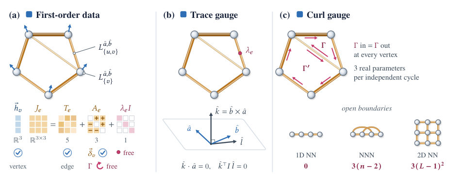
<figcaption class="paper-figure-caption"><b>Fig 5.</b> Figure 5: First-order reconstruction under uniform control. (a) Single-site and two-site responses determine the local fields h𝑣and the symmetric traceless parts 𝑇𝑒of the couplings. The skew-symmetric parts 𝐴𝑒enter only through their divergence at each vertex. (b) The trace terms 𝜆𝑒𝐼are invisible at first order, leaving one undetermined parameter per edge. (c) Adding a skew-symmetric matrix around a cycle, with signs following the edge orientations, preserves these divergences: the incoming and outgoing contributions cancel at every vertex. The illustrated graph has two independent cycles, supporting the circulations Γ and Γ′. Together, the trace and circulation ambiguities account for |𝐸|...</figcaption>
</figure>
</div>

<p><strong>Summary.</strong> This paper tackles the challenge of determining a quantum system's Hamiltonian using only limited experimental measurements, mimicking real-world analog quantum simulators. It proves that even with severe constraints on state preparation and measurement, the Hamiltonian parameters can be robustly recovered. This work provides crucial theoretical guarantees for the characterization of complex quantum many-body physics.</p>
<p><strong>Why it may be interesting.</strong> This work directly addresses the feasibility of characterizing complex, interacting quantum systems using near-term, resource-constrained quantum hardware, which is a major bottleneck in quantum simulation.</p>
<details>
<summary>Detailed structure</summary>
<p><strong>Main problem.</strong> The central task is learning the unknown Hamiltonian of a many-body quantum system solely from measurements of its time evolution dynamics.</p>
<p><strong>Main result.</strong> The authors prove that even under highly restricted experimental access models (like uniform or Z-basis measurements), the Hamiltonian parameters can be fully reconstructed for generic 2-local Hamiltonians.</p>
<p><strong>Method.</strong> The problem is mathematically reduced to solving highly structured systems of polynomial equations derived from short-time evolution probabilities, utilizing advanced algebraic techniques and numerical refinement methods.</p>
<p><strong>Model / system.</strong> The focus is on 2-local Hamiltonians on arbitrary interaction graphs, motivated by programmable analog quantum simulators such as Rydberg atom and trapped-ion platforms.</p>
<p><strong>Key observables.</strong> Transition probabilities $p^{\hat{a}, \hat{b}}_{z	o z'}(t)$ measured from short-time evolution, which encode the Hamiltonian parameters.</p>
<p><strong>Important parameters / regimes.</strong> The reconstruction is shown to be possible for generic Hamiltonians, with complexity scaling related to $O(\epsilon^{-2})$ in the time required for measurements.</p>
<p><strong>Assumptions / limitations.</strong> The results rely on the Hamiltonian being 'generic' (coefficients perturbed by small noise) and the ability to perform measurements under specific, constrained access models.</p>
<p><strong>Figures summary.</strong> Figure 1 and Table 1 summarize the learnability results based on the specific access model (Uniform vs. Z-basis) and the type of Hamiltonian considered.</p>
<p><strong>Paper structure.</strong> The paper is structured by analyzing different access models: first, the uniform control model, showing full parameter recovery; second, the Z-basis access model, showing recovery for specific lattice Hamiltonians up to unavoidable gauges.</p>
</details>
<details>
<summary>Abstract</summary>
<p>Learning the Hamiltonian of a many-body system from its dynamics is a central task in quantum science, yet the algorithms with the strongest provable guarantees assume some level of quantum control--fast, arbitrary single-qubit gates interleaved with time evolution, and measurements in arbitrary bases--that is beyond the capabilities of near-term analog quantum simulators. Motivated by analog atom- and ion-based platforms, we study Hamiltonian learning under minimal access models.   Uniform state preparation and measurements: We first consider the setting where in every experiment, one can rotate each qubit to the same state, perform short-time evolution, and measure every qubit in the same basis. Surprisingly, we show that for generic 2-local Hamiltonians on any interaction graph, all of the parameters can be reconstructed from such experiments.   Computational basis state preparation and measurements: We then consider a similarly constrained setting, but where state preparation and measurement are restricted to the computational basis. For nearest-neighbor Hamiltonians with only Pauli $X/Z$ interactions, a class which captures contemporary Rydberg atom platforms, we show that over 1D and 2D rectangular lattices, all of the parameters can be reconstructed from such experiments up to unavoidable gauges.   Our protocols introduce new techniques for solving structured polynomial systems over an extensive number of parameters. Taken together, our results suggest that one can learn a great deal from the dynamics of quantum many-body systems even under the most stringent experimental constraints.</p>
</details>
<p><sub><a href="#top">↑ back to top</a></sub></p>

<p><a id="paper-2610.04820"></a></p>
<h3 id="sidewall-spacer-passivated-epitaxial-nbnalnnbn-josephson-junctions-for-superconducting-qubit-applications"><a href="http://arxiv.org/abs/2610.04820v1">Sidewall spacer passivated epitaxial NbN/AlN/NbN Josephson junctions for superconducting qubit applications</a></h3>
<p><strong>Authors:</strong> Koki Honda, Daiki Kurihara, Hiroki Kutsuma, Hirotaka Terai, Taro Yamashita<br>
<strong>Type:</strong> experiment · <strong>Category:</strong> quantum information and computing · <strong>PDF:</strong> <a href="https://arxiv.org/pdf/2610.04820v1">https://arxiv.org/pdf/2610.04820v1</a><br>
<strong>Analysis basis:</strong> full PDF text, analyzed in chunks
<strong>Topic relevance:</strong> 🔥 <code>QC/QI experiment</code> <strong>5/5</strong></p>
<div class="figure-strip-hint">↔ Scroll figures horizontally</div>
<div class="paper-figures-scroll">
<figure class="paper-figure-card">
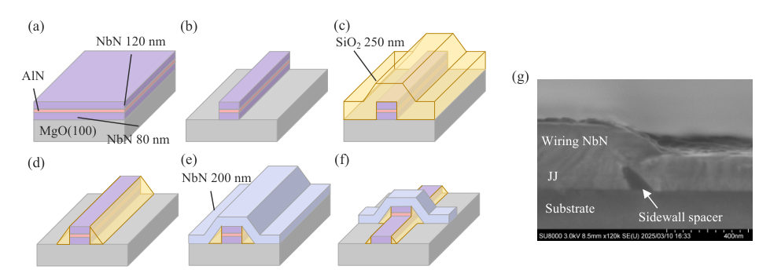
<figcaption class="paper-figure-caption"><b>Fig 1.</b> Figure 1: Fabrication process and cross-sectional SEM image of an NbN/AlN/NbN trilayer junction with the sidewall spacer structure: (a) An NbN/AlN/NbN trilayer is deposited on an MgO (100) substrate. (b) The trilayer is patterned and etched by chlorine-based ICP-RIE. (c) A SiO2 layer is deposited by CVD. (d) A sidewall spacer is formed by anisotropic etching of the SiO2 layer with a gas mixture of Ar, CF4, and CHF3. (e) An NbN wiring layer is deposited. (f) The wiring and counter-electrode layers are etched by fluorine-based RIE, thereby defining the junction area. (g) Cross-sectional SEM image of the fabricated junction.</figcaption>
</figure>
<figure class="paper-figure-card">
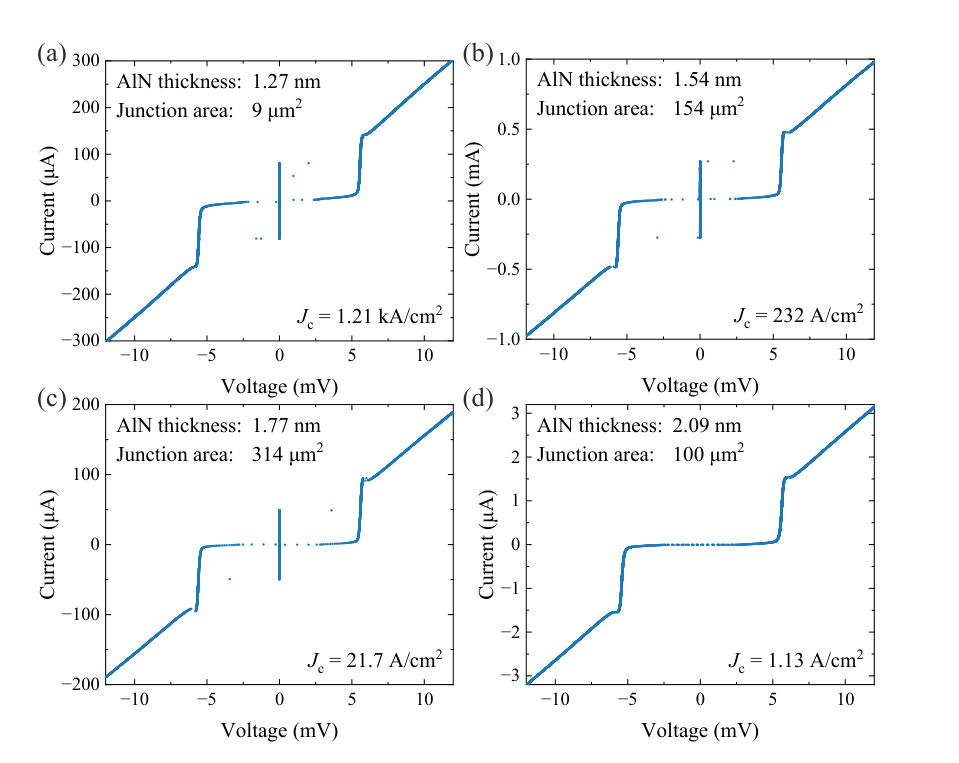
<figcaption class="paper-figure-caption"><b>Fig 2.</b> Figure 2: Current–voltage characteristics of NbN/AlN/NbN tunnel junctions with different AlN barrier thicknesses, measured at 2.3 K: (a) 1.27 nm, (b) 1.54 nm, (c) 1.77 nm, and (d) 2.09 nm. AlN thicknesses were estimated from the AlN deposition rate and deposition time.</figcaption>
</figure>
<figure class="paper-figure-card">
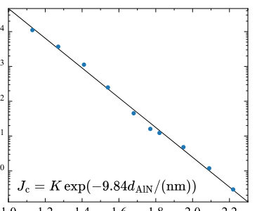
<figcaption class="paper-figure-caption"><b>Fig 3.</b> Figure 3: Dependence of the critical current density Jc on the AlN barrier thickness dAlN. The values of dAlN were estimated from the AlN deposition rate and deposition time. The solid line represents an exponential fit to the experimental data.</figcaption>
</figure>
</div>

<p><strong>Summary.</strong> This paper reports on a novel, scalable fabrication method for epitaxial NbN/AlN/NbN Josephson junctions designed for superconducting qubits. By implementing a sidewall spacer passivation technique, the authors overcome issues associated with amorphous dielectrics, achieving junctions with high quality and tunable critical current densities. This establishes a promising platform for building high-coherence quantum processors.</p>
<p><strong>Why it may be interesting.</strong> The work directly addresses the hardware limitations (fabrication complexity and coherence loss) in superconducting qubit platforms, which is central to quantum information science.</p>
<details>
<summary>Detailed structure</summary>
<p><strong>Main problem.</strong> Developing a scalable fabrication process for epitaxial Josephson junctions for superconducting qubits that minimizes amorphous dielectric material and fabrication complexity, which typically degrade qubit coherence times.</p>
<p><strong>Main result.</strong> The developed sidewall spacer passivation process yields high-quality epitaxial NbN/AlN/NbN junctions with excellent electrical characteristics and wide tunability of critical current density.</p>
<p><strong>Method.</strong> The authors fabricated the junctions using a multi-step process involving reactive DC magnetron sputtering, sidewall spacer passivation, and anisotropic etching, followed by electrical characterization.</p>
<p><strong>Model / system.</strong> The physical system is the epitaxial NbN/AlN/NbN Josephson junction, which serves as the core element for superconducting qubits. The performance is characterized by its Josephson energy ($E_J$) and charging energy ($E_C$).</p>
<p><strong>Key observables.</strong> Large gap voltage ($\approx 5.6 	ext{ mV}$), low subgap leakage currents, and a wide range of controllable critical current densities ($J_c$: $0.3$ to $10^4 	ext{ A/cm}^2$).</p>
<p><strong>Important parameters / regimes.</strong> The critical current density ($J_c$) is highly tunable by varying the thickness of the AlN tunnel barrier, following an exponential relationship.</p>
<p><strong>Assumptions / limitations.</strong> The primary assumption is that the sidewall spacer passivation process successfully mitigates coherence degradation caused by amorphous dielectrics and complex fabrication steps.</p>
<p><strong>Figures summary.</strong> Figure 1 illustrates the complex fabrication process using a sidewall spacer. Figure 2 shows the measured current-voltage characteristics for different AlN barrier thicknesses. Figure 3 demonstrates the exponential dependence of $J_c$ on the AlN barrier thickness.</p>
<p><strong>Paper structure.</strong> The paper details the fabrication process (including sidewall passivation) to create epitaxial NbN/AlN/NbN junctions. It then presents electrical characterization, showing the wide tunability of $J_c$ and confirming the robustness of the junctions against wet etching.</p>
</details>
<details>
<summary>Abstract</summary>
<p>Epitaxial NbN/AlN/NbN Josephson junctions are promising alternatives to conventional Al/AlO$_x$/Al junctions for superconducting qubits due to their crystalline tunnel barriers and the high transition temperature of NbN. However, their integration into quantum circuits typically requires complex fabrication processes involving amorphous interlayer dielectrics, which can degrade qubit coherence times. To address these issues, we developed sidewall spacer passivated epitaxial NbN/AlN/NbN junctions using a fabrication process that reduces both the volume of amorphous dielectric material and fabrication complexity. The fabricated junctions exhibited a large gap voltage of approximately 5.6 mV and low subgap leakage currents. By varying the thickness of the AlN tunnel barrier, high-quality junctions were fabricated over a wide range of critical current densities ${\it J}_c$, from 0.3 to 10$^4$ A/cm$^2$. In addition, the comparison of the current-voltage characteristics before and after buffered hydrofluoric acid treatment indicated that the wet etching process did not degrade the electrical characteristics of the junctions. These results establish a scalable fabrication process for epitaxial Josephson junctions and provide a promising platform for high-coherence nitride-based superconducting qubits.</p>
</details>
<p><sub><a href="#top">↑ back to top</a></sub></p>

<p><a id="paper-2610.04863"></a></p>
<h3 id="long-lived-coherent-phonons-reveal-competing-thermal-and-many-body-dynamics-in-math67math-inmath68mathsemath69math"><a href="http://arxiv.org/abs/2610.04863v1">Long-lived Coherent Phonons Reveal Competing Thermal and Many-Body Dynamics in $α$-In$_{2}$Se$_{3}$</a></h3>
<p><strong>Authors:</strong> Xuanchao Zhang, Dehao Yuan, Junhua Zhou, Vandana Tiwari, Fulu Zheng, Ajay Jha, Hong-Guang Duan<br>
<strong>Type:</strong> both · <strong>Category:</strong> statistical mechanics · <strong>PDF:</strong> <a href="https://arxiv.org/pdf/2610.04863v1">https://arxiv.org/pdf/2610.04863v1</a><br>
<strong>Analysis basis:</strong> full PDF text, analyzed in chunks
<strong>Topic relevance:</strong> 🔥 <code>methods for driven-dissipative</code> <strong>4/5</strong> · <code>Keldysh / 2PI / non-Gaussian methods</code> <strong>3/5</strong> · <code>correlated / nonlocal dissipation</code> <strong>3/5</strong> · <code>driven-dissipative phase transition</code> <strong>3/5</strong> · <code>non-equilibrium universality</code> <strong>3/5</strong> · <code>analog quantum simulation</code> <strong>2/5</strong> · <code>scars &amp; prethermalization</code> <strong>2/5</strong> · <code>interference shaping light</code> <strong>1/5</strong> · <code>quantum measurements</code> <strong>1/5</strong></p>
<div class="figure-strip-hint">↔ Scroll figures horizontally</div>
<div class="paper-figures-scroll">
<figure class="paper-figure-card">
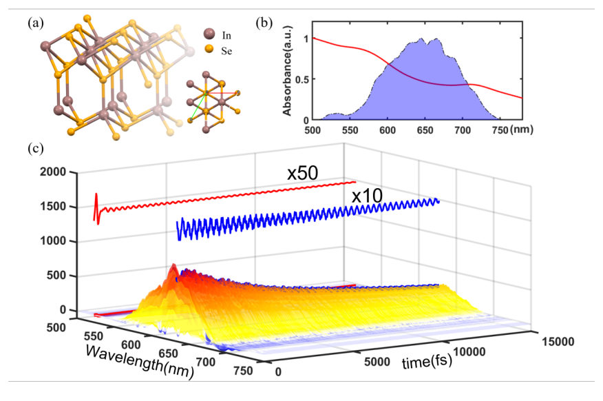
<figcaption class="paper-figure-caption"><b>Fig 1.</b> Figure 1: Ultrafast excitation reveals coherent lattice dynamics in α-In2Se3. (a) Crystal</figcaption>
</figure>
<figure class="paper-figure-card">
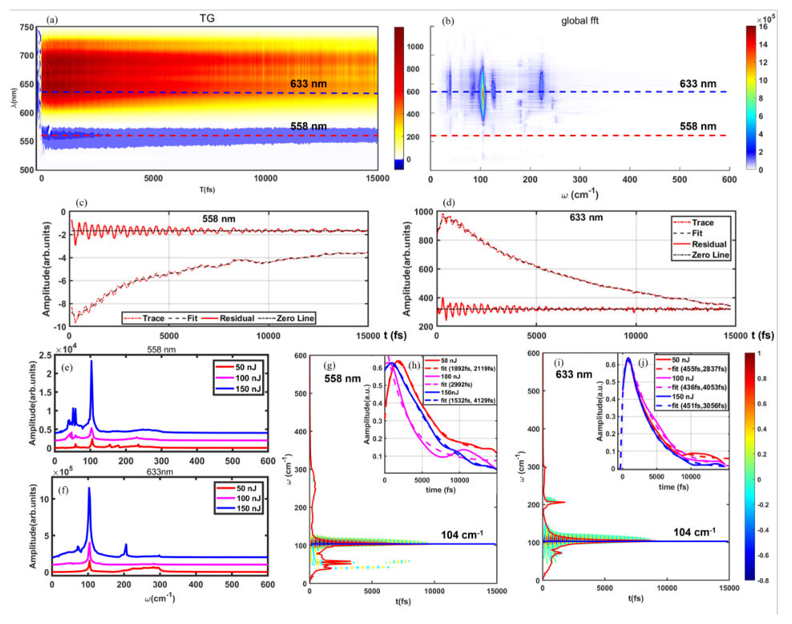
<figcaption class="paper-figure-caption"><b>Fig 2.</b> Figure 2: Excitation-density dependence of the coherent phonon response. (a) Room-</figcaption>
</figure>
<figure class="paper-figure-card">
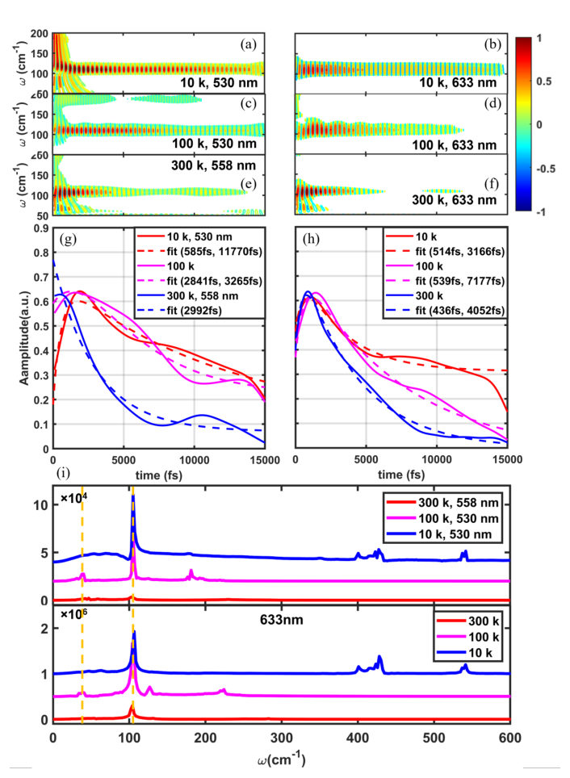
<figcaption class="paper-figure-caption"><b>Fig 3.</b> Figure 3: Thermal control of phonon phase memory in α-In2Se3. Time-frequency wavelet</figcaption>
</figure>
<figure class="paper-figure-card">
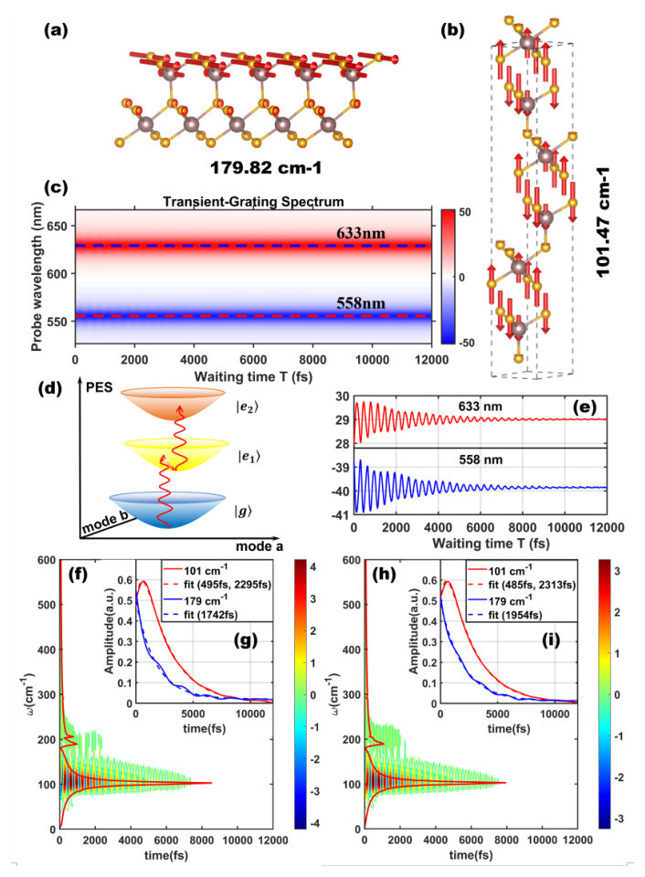
<figcaption class="paper-figure-caption"><b>Fig 4.</b> Figure 4: Microscopic assignment and quantum-dynamical description of the coherent lat-</figcaption>
</figure>
</div>

<p><strong>Summary.</strong> This work uses ultrafast spectroscopy on $\alpha$-In$_2$Se$_3$ to study how quantum coherence decays after photoexcitation. By varying temperature and excitation intensity, the researchers successfully decouple the effects of thermal lattice scattering from those caused by excited carriers. This establishes the material as a key model for understanding the transition from coherent lattice motion to an incoherent many-body state.</p>
<p><strong>Why it may be interesting.</strong> The explicit separation of thermal dephasing from electronic/density-driven damping mechanisms in a polar semiconductor provides a rich platform for studying non-equilibrium quantum dynamics, highly relevant to open quantum systems.</p>
<details>
<summary>Detailed structure</summary>
<p><strong>Main problem.</strong> The research investigates the fate of quantum coherence following photoexcitation in low-dimensional solids, specifically distinguishing between thermal dephasing and density-dependent many-body interactions.</p>
<p><strong>Main result.</strong> The study establishes $\alpha$-In$_2$Se$_3$ as a model system where ultrafast spectroscopy can independently probe lattice coherence, thermal fluctuations, and carrier-density-dependent interactions.</p>
<p><strong>Method.</strong> The approach combines broadband transient-grating spectroscopy with advanced quantum-dynamical simulations, including the Hierarchy Equation of Motion (HEOM) and vibronic models.</p>
<p><strong>Model / system.</strong> The system is the ferroelectric $\alpha$-In$_2$Se$_3$, a polar van der Waals semiconductor. The dynamics are modeled using effective vibronic Hamiltonians and treated via non-perturbative methods like HEOM to capture environmental relaxation.</p>
<p><strong>Key observables.</strong> Coherent phonon oscillations ($\sim 104 \text{ cm}^{-1}$ mode), coherence lifetime, and the dependence of the response on temperature (10–300 K) and pump-fluence.</p>
<p><strong>Important parameters / regimes.</strong> Temperature range (10–300 K), ultrafast pulse duration ($\sim 5 \text{ fs}$), and excitation energy (pump-fluence).</p>
<p><strong>Assumptions / limitations.</strong> The model uses an effective three-level vibronic Hamiltonian and relies on HEOM truncations and high-temperature approximations for environmental coupling.</p>
<p><strong>Figures summary.</strong> Figures show transient-grating spectra demonstrating persistent oscillations, temperature dependence curves, and wavelet analysis maps confirming the time-evolution of specific phonon modes.</p>
<p><strong>Paper structure.</strong> The paper progresses from experimental observation of temperature and fluence effects on coherence, to developing a detailed vibronic model, and finally validating the model by tracking specific phonon modes through calculations.</p>
</details>
<details>
<summary>Abstract</summary>
<p>The fate of quantum coherence following photoexcitation is a central problem in nonequilibrium condensed-matter physics, especially in low-dimensional solids where electronic, structural and many-body energy scales are strongly coupled. Here, we investigate this interplay in ferroelectric $α$-In$_{2}$Se$_{3}$ using broadband transient-grating spectroscopy with $\sim$5 fs laser pulses. Photoexcitation launches pronounced oscillations dominated by a $\sim$104 cm$^{-1}$ mode that persists for several picoseconds. Measurements from 10 to 300 K show that its frequency remains nearly unchanged while its coherence is progressively suppressed, distinguishing the lattice coordinate from thermally activated dephasing. Varying excitation energy reveals a distinct crossover in which increasing photoexcitation progressively modifies and damps the coherent response. First-principles calculations assign the dominant oscillation to a 101.47 cm$^{-1}$ $Γ$-point optical phonon involving collective In-Se displacement, while quantum-dynamical simulations reproduce the main transient-grating oscillations. These results establish $α$-In$_{2}$Se$_{3}$ as a model system for independently probing lattice coherence, thermal fluctuations and carrier-density-dependent interactions, revealing how a polar van der Waals semiconductor evolves from coherent lattice motion toward an incoherent many-body state after ultrafast excitation.</p>
</details>
<p><sub><a href="#top">↑ back to top</a></sub></p>

<p><a id="paper-2610.05589"></a></p>
<h3 id="autonomous-quantum-memories-from-classical-stochastic-processes"><a href="http://arxiv.org/abs/2610.05589v1">Autonomous Quantum Memories from Classical Stochastic Processes</a></h3>
<p><strong>Authors:</strong> Nadav Drechsler, Yuval Oreg, Dorit Aharonov<br>
<strong>Type:</strong> theory · <strong>Category:</strong> quantum information and computing · <strong>PDF:</strong> <a href="https://arxiv.org/pdf/2610.05589v1">https://arxiv.org/pdf/2610.05589v1</a><br>
<strong>Analysis basis:</strong> full PDF text, analyzed in chunks
<strong>Topic relevance:</strong> 🔥 <code>methods for driven-dissipative</code> <strong>4/5</strong> · <code>driven-dissipative phase transition</code> <strong>3/5</strong> · <code>non-equilibrium universality</code> <strong>3/5</strong> · <code>Keldysh / 2PI / non-Gaussian methods</code> <strong>2/5</strong> · <code>correlated / nonlocal dissipation</code> <strong>2/5</strong> · <code>quantum measurements</code> <strong>2/5</strong> · <code>scars &amp; prethermalization</code> <strong>2/5</strong> · <code>analog quantum simulation</code> <strong>1/5</strong></p>
<div class="figure-strip-hint">↔ Scroll figures horizontally</div>
<div class="paper-figures-scroll">
<figure class="paper-figure-card">
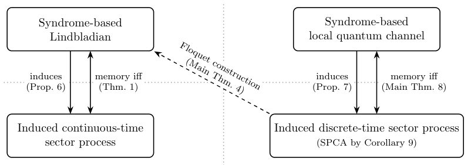
<figcaption class="paper-figure-caption"><b>Fig 1.</b> Figure 1: The reduction diagram. Rows: quantum dynamics (top) and the classical process it induces (bottom). Columns: continuous-time (asynchronous) dynamics (left) and synchronous discrete-time dynamics (right). In each column, the vertical arrows are the reduction: the quantum dynamics induces a classical sector process (Propositions 6 and 7), and memory of one is equivalent to memory of the other, up to a constant factor (Theorems 1 and 8). The diagonal arrow is the periodic construction of Section 7: from an SPCA it builds a Lindbladian whose sampled sector process is an SPCA run (Theorem 4).</figcaption>
</figure>
<figure class="paper-figure-card">
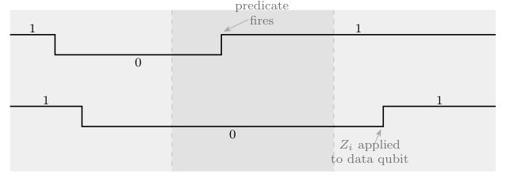
<figcaption class="paper-figure-caption"><b>Fig 2.</b> Figure 3: One correction cycle of the periodic Lindbladian at a site where a(σ) i = 1 (correction required), shown for a site that was also corrected in the preceding cycle, so that both registers enter the cycle set. Reset: both registers return to 0 when their reset clocks fire, whatever state the preceding cycle left them in. Read: Dσ i latches the local predicate (0 →1) when its Poisson clock fires within the Read stage. Execute: once Dσ i = 1, the Pauli correction (Zi in the X-sector) is applied to the data qubit and Eσ i flips 0→1, ensuring a single application. The registers remain set at the cycle boundary and are cleared by the next Reset stage. If an operation does not occur...</figcaption>
</figure>
</div>

<p><strong>Summary.</strong> This work develops a general theoretical framework to relate quantum memory to classical stochastic processes, moving beyond the limitations of thermal equilibrium assumptions. By establishing equivalences between Lindbladian dynamics and classical Markov chains, the authors provide a systematic method for constructing and proving autonomous quantum memories. This advances the field by offering a general blueprint for designing robust quantum information storage in realistic physical settings.</p>
<p><strong>Why it may be interesting.</strong> It provides a powerful, general mathematical tool to construct and prove the existence of quantum memory in systems that mimic physical, non-equilibrium processes, which is highly relevant for building fault-tolerant quantum hardware.</p>
<details>
<summary>Detailed structure</summary>
<p><strong>Main problem.</strong> The paper addresses the fundamental question of when quantum memory can emerge in autonomous many-body systems operating out of thermal equilibrium.</p>
<p><strong>Main result.</strong> It establishes a general framework showing that quantum memory can be systematically derived and constructed from classical probabilistic processes, particularly through syndrome-based probabilistic cellular automata (SPCAs).</p>
<p><strong>Method.</strong> The authors employ a theoretical framework comparing quantum dynamics generated by Lindbladians (asynchronous) and Probabilistic Cellular Automata (synchronous) to continuous-time classical Markov dynamics.</p>
<p><strong>Model / system.</strong> The focus is on quantum memories, specifically CSS-based codes, analyzed under Pauli noise. The dynamics are modeled using Lindbladians or SPCAs, moving beyond the restrictive assumptions of thermal equilibrium.</p>
<p><strong>Key observables.</strong> Memory retention time, equivalence between quantum and classical memory dynamics, and the stability of the 4D toric code.</p>
<p><strong>Important parameters / regimes.</strong> Noise type (Pauli noise), dimensionality (e.g., 4D toric code), and the distinction between asynchronous (Lindbladian) and synchronous (PCA) dynamics.</p>
<p><strong>Assumptions / limitations.</strong> The primary assumption is the ability to map quantum memory problems to classical stochastic processes; a key open question is lifting classical memory to a quantum memory under time-independent Lindbladians.</p>
<p><strong>Figures summary.</strong> Not specified.</p>
<p><strong>Paper structure.</strong> The paper develops a general equivalence between quantum and classical memory, first in the asynchronous setting using Lindbladians, and then in the synchronous setting using SPCAs. It provides rigorous proofs for specific cases, such as the 4D toric code, and concludes by outlining the general framework.</p>
</details>
<details>
<summary>Abstract</summary>
<p>The study of quantum memories out of thermal equilibrium is motivated both by the need for memories that withstand realistic noise in fault-tolerant quantum computers and by the fundamental question of when quantum memory can emerge in autonomous many-body systems. We establish a general equivalence between CSS-based quantum memories subject to Pauli noise and classical memories via two associated probabilistic processes. In the asynchronous setting, where the quantum dynamics is generated by a Lindbladian, we identify a broad class of syndrome-based Lindbladians for which the quantum memory problem is equivalent to memory in continuous-time classical Markov dynamics. In the synchronous setting, we introduce syndrome-based probabilistic cellular automata (SPCAs) and establish a one-to-one correspondence between their classical memories and CSS-based quantum memories under local quantum channels. This framework provides a systematic route for deriving and constructing quantum memories from classical probabilistic processes, and recovers known results, including the fact that the 4D toric code is a quantum memory in the presence of thermal noise.   As an application, we give the first rigorous proof that the 4D toric code with Toom's rule is a quantum memory in the presence of local Pauli noise, provided the error is below a constant threshold. We prove this both for the corresponding synchronous, PCA-type quantum dynamics and for a Floquet Lindbladian. More generally, we show that classical memory in an SPCA can be lifted to a quantum memory under Floquet Lindbladian dynamics; whether this can be done with a time-independent Lindbladian remains open. Our results provide a general framework for relating classical and quantum memory, shed light on the conditions for fully autonomous quantum memories, and may guide the construction of provable autonomous quantum memories in low dimensions.</p>
</details>
<p><sub><a href="#top">↑ back to top</a></sub></p>

<p><a id="paper-2610.03889"></a></p>
<h3 id="exact-temporal-criticalities-of-entanglement-and-negativity-in-gaussian-and-non-gaussian-dissipative-kitaev-chains"><a href="http://arxiv.org/abs/2610.03889v1">Exact Temporal Criticalities of Entanglement and Negativity in Gaussian and Non-Gaussian Dissipative Kitaev Chains</a></h3>
<p><strong>Authors:</strong> Shrey Chowdhary, Sanket Chirame, Stephan Haas, Rishabh Jha<br>
<strong>Type:</strong> theory · <strong>Category:</strong> statistical mechanics · <strong>PDF:</strong> <a href="https://arxiv.org/pdf/2610.03889v1">https://arxiv.org/pdf/2610.03889v1</a><br>
<strong>Analysis basis:</strong> full PDF text, analyzed in chunks
<strong>Topic relevance:</strong> 🔥 <code>driven-dissipative phase transition</code> <strong>4/5</strong> · <code>analog quantum simulation</code> <strong>3/5</strong> · <code>correlated / nonlocal dissipation</code> <strong>3/5</strong> · <code>methods for driven-dissipative</code> <strong>3/5</strong> · <code>non-equilibrium universality</code> <strong>3/5</strong> · <code>Keldysh / 2PI / non-Gaussian methods</code> <strong>2/5</strong> · <code>quantum measurements</code> <strong>1/5</strong></p>
<div class="figure-strip-hint">↔ Scroll figures horizontally</div>
<div class="paper-figures-scroll">
<figure class="paper-figure-card">
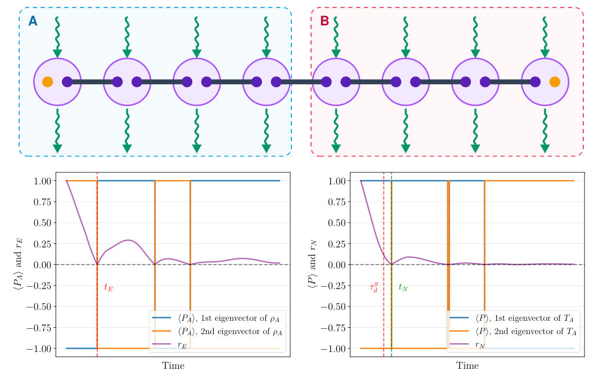
<figcaption class="paper-figure-caption"><b>Fig 1.</b> Figure 1: Schematic of the bipartition, the dissipative environment, and the temporal diagnostics studied in this work. Top: an open Kitaev chain is divided into nonempty regions A and B. Each circle is a site j and the two dots inside it are its Majorana operators aj and bj, which carry a site index rather than a region label. At the compact Majorana point, the dark links pair bj with aj+1 on neighboring sites, the orange markers denote the two unpaired physical end modes, and exactly one Majorana bond crosses the cut. The green arrows depict local particle loss and gain, which realize weak parity symmetry; the strong-symmetry density-dephasing bath acts on the same geometry and is not...</figcaption>
</figure>
<figure class="paper-figure-card">
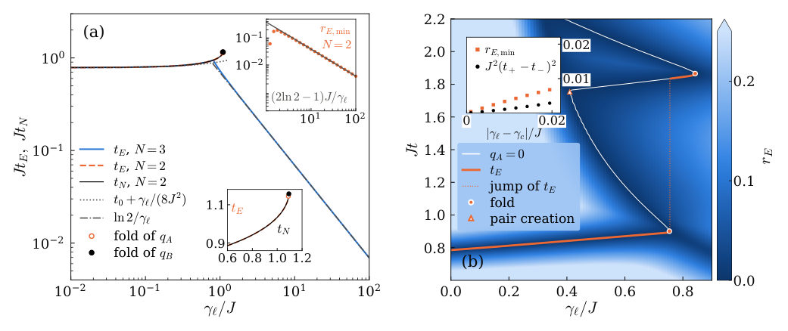
<figcaption class="paper-figure-caption"><b>Fig 2.</b> Figure 2: Entanglement clock from weak to strong loss. Exact covariance evolution, Eq. (32), under pure loss, γg = 0 (so κ = ξ = γℓ), at the compact point µ = 0, ∆= J (Eq. (13)), with the first N sites filled (Eq. (15)); ρA does not depend on LB. Pure gain gives the same clocks from the complemented initial pattern (Eq. (45)). The gap rE is the smallest |ζm| of ΓA (Eq. (40)), tE is the first zero of qA = (−1)LA Pf ΓA (Eq. (41)), and tN is the first zero of qAqB (Eq. (60)). (a) tE for LA = 50 with N = 3 (odd) and N = 2 (even), and tN for N = 2 and L = 100 (for N = 3 it coincides with tE). Weak loss delays all three from t0 = π/(4J) by γℓ/(8J2) (dotted; Eqs. (44) and (62)). At strong loss the...</figcaption>
</figure>
<figure class="paper-figure-card">
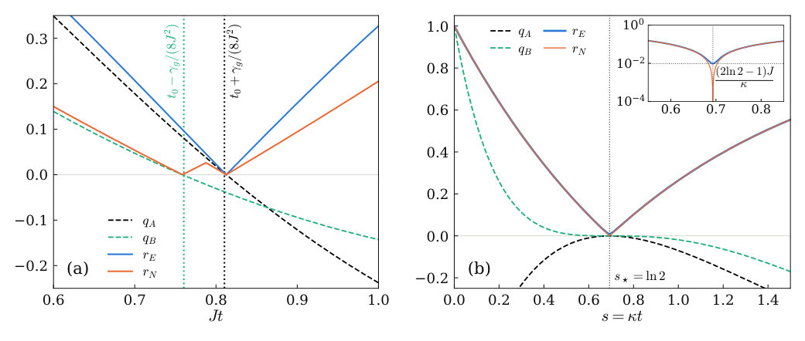
<figcaption class="paper-figure-caption"><b>Fig 3.</b> Figure 3: The negativity gap closes wherever qA or qB vanishes. Exact many-body evolution of Eq. (7), which tests the rule without assuming Gaussianity, under pure gain, γℓ= 0, at the compact point µ = 0, ∆= J, with the first N sites filled and A the first LA sites. Solid lines show rE and rN of Eq. (28), with TA of Eqs. (20) and (21), and dashed lines qA and qB (Eq. (17)). (a) Weak gain, γg = 0.2J, for L = 8, LA = 4, and N = 4. The parity qB vanishes first, before t0 = π/(4J), and rN closes there; qA vanishes later, where rE closes and rN closes again. Dotted lines mark the first-order predictions t0 −γg/(8J2) for qB (Eq. (62)) and t0 + γg/(8J2) for qA (Eq. (44)). (b) Strong gain, γg =...</figcaption>
</figure>
<figure class="paper-figure-card">
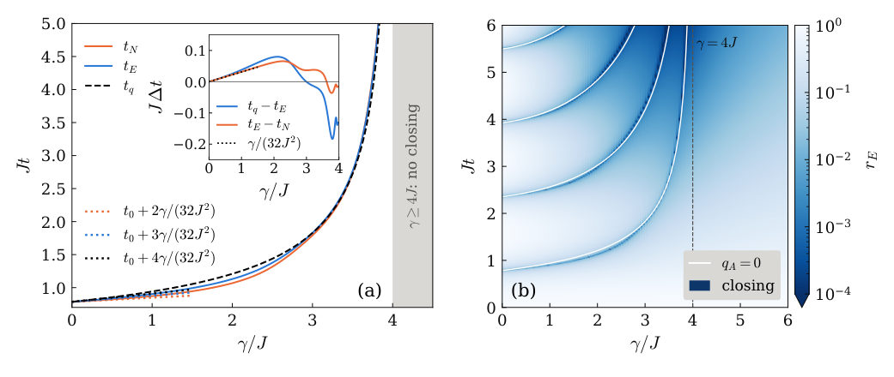
<figcaption class="paper-figure-caption"><b>Fig 4.</b> Figure 4: Closings and parity balance from weak dephasing to critical damping. Exact many-body evolution of Eq. (10), from the eigenmodes of the Liouvillian, at the compact point µ = 0, ∆= J, for A the first LA = 3 sites and any product-Fock initial state (Eq. (69)); ρA does not depend on LB (Eq. (70)). (a) First closings tE and tN of Eq. (27) (solid), with TA of Eqs. (20) and (21) and tN for L = 8, and the parity balance tq of Eq. (82) (dashed). Dotted lines show the first-order clocks t0 + 2γ/(32J2) for tN (Eq. (100)), t0 + 3γ/(32J2) for tE (Eq. (84)), and t0 + 4γ/(32J2) for tq (Eq. (85)), with t0 = π/(4J). All three clocks diverge together as γ →4J−, and at the sampled rates from 4.05J...</figcaption>
</figure>
<figure class="paper-figure-card">
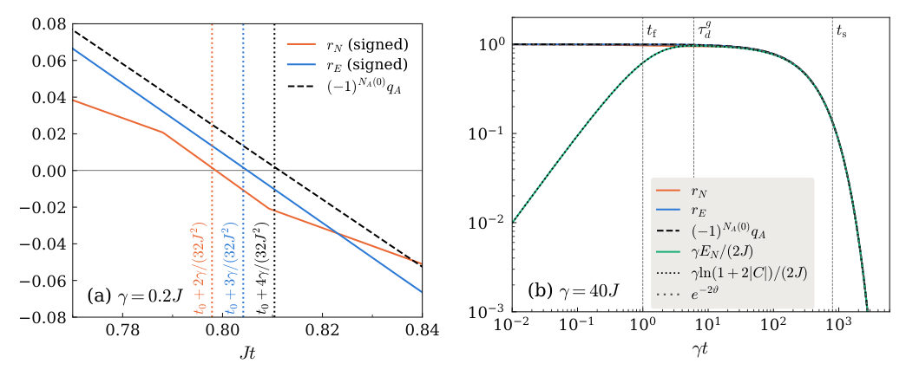
<figcaption class="paper-figure-caption"><b>Fig 5.</b> Figure 5: Closings as sign changes at weak dephasing, and their absence at strong dephasing. Exact many-body evolution of Eq. (10) at the compact point µ = 0, ∆= J, for L = 8, A the first LA = 4 sites, and any product- Fock initial state, with NA(0) fermions initially in A. Solid: rE (rN) of Eq. (28), taken negative while the leading eigenvector of ρA has subsystem parity (the leading eigenvalue of TA of Eqs. (20) and (21) has sign) opposite to its value at t = 0; dashed: (−1)NA(0)qA (Eqs. (82) and (113)). (a) γ = 0.2J. The zeros tN &lt; tE &lt; tq lie close to t0 + (2, 3, 4)γ/(32J2), with t0 = π/(4J) (dotted; Eqs. (100), (84), and (85)), whereas the Gaussian parity rules of Eqs. (41) and (60)...</figcaption>
</figure>
</div>

<p><strong>Summary.</strong> This work analyzes when and how entanglement and negativity gaps close in open fermionic chains like the Kitaev model under various forms of dissipation. The key finding is that the closing of these gaps is governed by the system's Gaussian nature, not just its symmetry. It provides precise theoretical predictions for these temporal criticalities, including the geometric decoherence time.</p>
<p><strong>Why it may be interesting.</strong> It provides a detailed, quantitative comparison of different measures of quantum correlations (entanglement vs. negativity) in non-equilibrium settings, which is crucial for understanding decoherence in realistic quantum materials.</p>
<details>
<summary>Detailed structure</summary>
<p><strong>Main problem.</strong> The paper investigates the temporal criticalities—the closing of entanglement or negativity gaps—in open fermionic systems, determining the order and relation of these events to geometric decoherence.</p>
<p><strong>Main result.</strong> Gaussianity, rather than symmetry, dictates the criticality criterion; for Gaussian states, the negativity gap closes at or before the entanglement gap, and the geometric decoherence time ($ au_{gd}$) is precisely calculated in the weak-rate limit.</p>
<p><strong>Method.</strong> The authors use analytical techniques, including solving coupled differential equations for coherence and population differences, and applying perturbation theory to analyze time evolution in different dissipative regimes.</p>
<p><strong>Model / system.</strong> The study focuses on open Kitaev chains subjected to various baths: weak symmetry loss/gain (keeping the state Gaussian) and strong symmetry density dephasing (making the state non-Gaussian).</p>
<p><strong>Key observables.</strong> Entanglement gap ($\Delta E$), Negativity gap ($\Delta N$), Geometric decoherence time ($  au_{gd}$), and fermion parity expectation values ($q_A, q_B$).</p>
<p><strong>Important parameters / regimes.</strong> Dissipation rates ($\gamma_\ell, \gamma_g$), coupling strength ($J$), and the ratio of rates to coupling ($ \gamma/J$).</p>
<p><strong>Assumptions / limitations.</strong> The analysis relies on comparing three time scales ($t_E, t_N, 	au_{gd}$) and uses approximations like small rate expansions for $ au_{gd}$.</p>
<p><strong>Figures summary.</strong> Figures illustrate the entanglement clock ($t_E$) and the difference between $t_E$ and $t_N$ under pure loss and density dephasing rates.</p>
<p><strong>Paper structure.</strong> The paper systematically compares the dynamics under weak symmetry (loss/gain) versus strong symmetry (dephasing) baths, deriving specific criteria for gap closing based on parity balance, and finally calculating $ au_{gd}$ using perturbation theory.</p>
</details>
<details>
<summary>Abstract</summary>
<p>When the two largest eigenvalues of an entanglement or negativity spectrum meet, the gap of the corresponding entanglement or negativity Hamiltonian closes while entropies stay smooth, an event we call a temporal criticality. We ask when such criticalities occur in open fermionic systems, in which order, and whether they precede the geometric decoherence time, at which the negativity starts to fall. We compare loss and gain, which respect fermion parity only on average (weak symmetry) and keep the state Gaussian, with density dephasing, which respects it in every jump (strong symmetry) and makes the state non-Gaussian. We find that Gaussianity, rather than the symmetry, fixes the criterion for a criticality. In a Gaussian state the entanglement gap of a subsystem closes exactly when its two parity sectors carry equal weight, and the negativity gap closes exactly when this happens for the subsystem or its complement, so the negativity criticality never comes after the entanglement one. Uniform balanced loss and gain only shrink the two parities and leave both criticalities in place at every rate, for any quadratic Hamiltonian. In an open Kitaev chain, weak imbalanced loss and gain shift the criticalities by amounts set by the occupations at the cut, and at strong rates they allow a closing near the relaxation time only when an odd number of neighboring sites pass half filling. For dephasing we solve the non-Gaussian dynamics exactly at the point where the bond terms of the chain commute. Weak dephasing delays both criticalities and, away from the chain ends, moves them ahead of the parity balance, where the parity rules of Gaussian states would place them. As the dephasing rate approaches critical damping, both criticalities recede to infinite time, and at strong dephasing the negativity starts to fall long before either gap begins to shrink.</p>
</details>
<p><sub><a href="#top">↑ back to top</a></sub></p>

<p><a id="paper-2610.06209"></a></p>
<h3 id="cooling-and-delocalizing-thermal-oscillators-in-hollow-core-fibers-using-optical-fringes"><a href="http://arxiv.org/abs/2610.06209v1">Cooling and delocalizing thermal oscillators in hollow-core fibers using optical fringes</a></h3>
<p><strong>Authors:</strong> Soumya Chakraborty, Pardeep Kumar, Gordon K. L. Wong, Claudiu Genes, Nicolas Y. Joly<br>
<strong>Type:</strong> both · <strong>Category:</strong> other · <strong>PDF:</strong> <a href="https://arxiv.org/pdf/2610.06209v1">https://arxiv.org/pdf/2610.06209v1</a><br>
<strong>Analysis basis:</strong> full PDF text, analyzed in chunks
<strong>Topic relevance:</strong> 🔥 <code>interference shaping light</code> <strong>4/5</strong> · 🔥 <code>quantum measurements</code> <strong>4/5</strong> · <code>quantum optics experiment</code> <strong>3/5</strong> · <code>analog quantum simulation</code> <strong>2/5</strong> · <code>driven-dissipative phase transition</code> <strong>2/5</strong> · <code>methods for driven-dissipative</code> <strong>2/5</strong> · <code>Keldysh / 2PI / non-Gaussian methods</code> <strong>1/5</strong></p>
<div class="figure-strip-hint">↔ Scroll figures horizontally</div>
<div class="paper-figures-scroll">
<figure class="paper-figure-card">
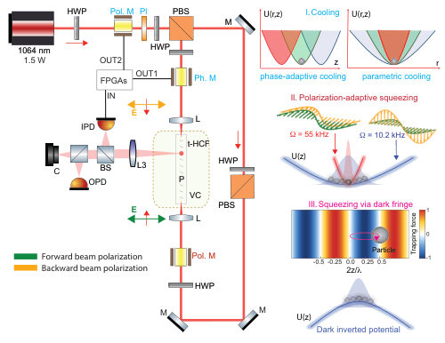
<figcaption class="paper-figure-caption"><b>Fig 1.</b> FIG. 1. Schematic and protocol of the HC-PCF dual- beam optical tweezer for multimode cooling and axial squeezing; P: levitated particle; VC: vacuum chamber; t- HCF: twisted hollow-core fiber; L: 75 mm lens; L3: 0.26 NA objective; OPD: out-of-loop photodiode; IPD: in-loop pho- todiode; AM: amplitude modulator; PhM: phase modulator; FPGAs: Moku:Lab and Red Pitaya STEMlab-125. Active feedback cools the axial motion by modulating the standing- wave position (position of the axial potential U(z)) via the relative phase of the counterpropagating beams, and the ra- dial motion by modulating the radial trap stiffness (slope of the radial potential U(r)). Mechanical anti-squeezing is real- ized...</figcaption>
</figure>
<figure class="paper-figure-card">
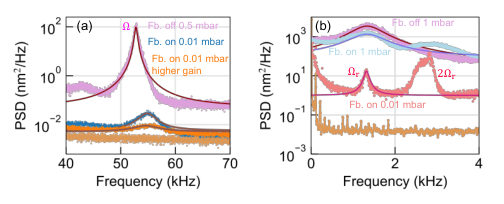
<figcaption class="paper-figure-caption"><b>Fig 2.</b> FIG. 2. Simultaneous cooling of two eigenmodes; (a) Axial PSD shown at 0.5 mbar without feedback cooling (plum colored). The blue and orange PSD at 0.01 mbar are recorded with feedback cooling for two different feedback cooling rates of 4 kHz and 7.2 kHz, respectively. (b) Parametric feedback cooling of the radial eigenmode of a 234 nm silica particle. The plum-colored spectra are recorded in the absence of parametric cooling at 1 mbar of air pressure. The steel-blue and coral- red-colored spectra are recorded at 1 mbar and 0.01 mbar air pressure in the presence of feedback cooling featuring second harmonic feedback signals at 2Ωr. All the spectra are fitted with Lorentzian curves.</figcaption>
</figure>
<figure class="paper-figure-card">
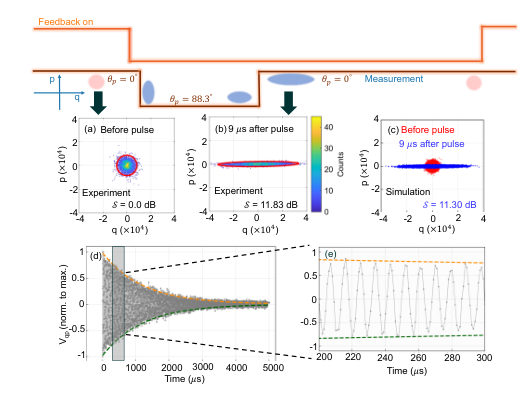
<figcaption class="paper-figure-caption"><b>Fig 3.</b> FIG. 3. Evolution of squeezed thermal states; Experimen- tal (a-b) and simulated (c) phase-space distributions normal- ized to the zero-point motion (zpm), showing the anti-squeezed state under thermal noise. The position and momentum zpms are qzpm = 4.43 pm and pzpm = 22.5 yN/s. The red circle (ellipse) on top of (a) and (b) are the analytical distributions using Eq. (4). The experimental data and the numerical data are taken over 3000 and 20000 realizations, respectively. (d-e) Thermal decoherence of the position–momentum correlation (Vqp), shown at times starting 9 µs after application of the polarization-rotating pulse. The time 0 µs refers to the end of the pulse. The red and blue...</figcaption>
</figure>
<figure class="paper-figure-card">
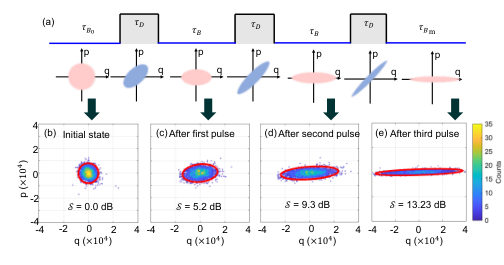
<figcaption class="paper-figure-caption"><b>Fig 4.</b> FIG. 4. Demonstration of nanoparticle motional delo- calization using a transient inverted optical potential; (a–e) The standing-wave trap is shifted by to the dark fringe for 1.8 µs for three times in a row and measurement is done once the particle is transferred back to the bight region, pro- ducing an increase of the position variance by 13.23 (±0.5) dB relative to the initial thermal variance. The experimental distributions are normalized to the zero-point motion (zpm) and fitted with Eq. (4).</figcaption>
</figure>
<figure class="paper-figure-card">
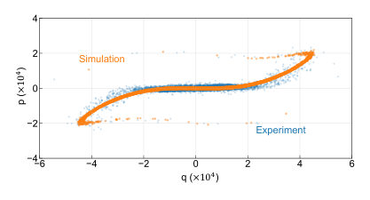
<figcaption class="paper-figure-caption"><b>Fig 5.</b> FIG. 5. Non-Gaussian motional state preparation; Nu- merical and experimental phase-space distributions of a non- Gaussian state generated through massive delocalization in the nonlinear optical trap using four consecutive dark-fringe placement events. The blue points are experimental data taken over 6000 realizations while the orange points are numerical solution of nonlinear motional dynamics taken over 20000 re- alizations.</figcaption>
</figure>
</div>

<p><strong>Summary.</strong> This research demonstrates advanced control over trapped nanoparticles in hollow-core fibers, achieving both deep cooling and controlled axial delocalization (anti-squeezing). By utilizing optical fringe manipulation, the authors quantify delocalization enhancements exceeding 13 dB, establishing the fiber as a versatile platform for macroscopic quantum physics and long-range sensing.</p>
<p><strong>Why it may be interesting.</strong> This work provides a highly controllable platform for studying quantum non-Gaussian dynamics and quantum non-linear optics in a solid-state waveguide, which is crucial for realizing quantum memories and sensing.</p>
<details>
<summary>Detailed structure</summary>
<p><strong>Main problem.</strong> The paper addresses the advanced control of in-fiber motion for trapped nanoparticles, specifically achieving multimodal cooling and inducing controlled axial delocalization (position anti-squeezing).</p>
<p><strong>Main result.</strong> The authors successfully demonstrated delocalization enhancements of up to 13.23 dB using multi-pass positioning at dark fringes, while also showing that strong delocalization leads to non-Gaussian quantum states.</p>
<p><strong>Method.</strong> The study employs optical interference techniques, combining phase-adaptive feedback cooling with pulsed manipulation of the trapping potential via polarization control or fringe shifting.</p>
<p><strong>Model / system.</strong> The physical system is a silica nanoparticle trapped within a hollow-core photonic crystal fiber (HC-PCF) using optical standing waves formed by interfering counterpropagating modes. The dynamics are modeled using the evolution of the covariance matrix in phase space.</p>
<p><strong>Key observables.</strong> Position variance ($\Delta x^2$), delocalization enhancement (measured in dB relative to the cold state), and center-of-mass temperatures.</p>
<p><strong>Important parameters / regimes.</strong> Cooling temperatures near 1 K, delocalization enhancements up to 13.23 dB, and the relative polarization angle ($   heta_p$) used for pulsing.</p>
<p><strong>Assumptions / limitations.</strong> The delocalized state is assumed to relax toward the initial thermal state under thermal noise, and the analysis relies on modeling the evolution of the covariance matrix through deterministic propagators and noise terms.</p>
<p><strong>Figures summary.</strong> Figures illustrate the setup for dual-beam trapping, show the cooling of eigenmodes, and depict the evolution of phase-space distributions, demonstrating the transition from squeezed to anti-squeezed states.</p>
<p><strong>Paper structure.</strong> The paper details the cooling protocols, then presents two distinct delocalization protocols: non-adiabatic fringe suppression (Protocol A) and multi-pass positioning at dark fringes (Protocol B). It mathematically models the covariance evolution across these pulsed cycles, concluding with an analysis of recoil heating in dark vs. bright traps.</p>
</details>
<details>
<summary>Abstract</summary>
<p>Trapped particles in hollow-core fibers enable long-range sensing, though advanced control of their in-fiber motion, such as multimodal cooling and squeezing, remains challenging. Here, we present optical interference-based techniques for controlling a fringe-trapped silica nanoparticle inside a fiber. After feedback-cooling its axial and radial motion, we induce axial delocalization (position anti-squeezing) via two approaches. First, non-adiabatic fringe suppression expands position variance by 11.83 ($\pm$0.7) dB to that of the initial cold-state while retaining Gaussian statistics. Second, multi-pass particle positioning at dark fringes increases delocalization to 13.23 ($\pm$0.5) dB relative to the cold-state's variance via inverted potentials, in agreement with stochastic theory. Stronger delocalization produces non-Gaussian states. Our results demonstrate fringe-trapped particles in hollow-core fibers as a versatile platform for long-range sensing and macroscopic quantum physics.</p>
</details>
<p><sub><a href="#top">↑ back to top</a></sub></p>

<p><a id="paper-2610.04176"></a></p>
<h3 id="parallelizing-dissipative-quantum-algorithms"><a href="http://arxiv.org/abs/2610.04176v1">Parallelizing Dissipative Quantum Algorithms</a></h3>
<p><strong>Authors:</strong> Sudatta Hor, Nathan Wiebe, Yongshan Ding<br>
<strong>Type:</strong> theory · <strong>Category:</strong> quantum information and computing · <strong>PDF:</strong> <a href="https://arxiv.org/pdf/2610.04176v1">https://arxiv.org/pdf/2610.04176v1</a><br>
<strong>Analysis basis:</strong> full PDF text, analyzed in chunks
<strong>Topic relevance:</strong> 🔥 <code>methods for driven-dissipative</code> <strong>4/5</strong> · <code>analog quantum simulation</code> <strong>3/5</strong> · <code>correlated / nonlocal dissipation</code> <strong>3/5</strong> · <code>driven-dissipative phase transition</code> <strong>3/5</strong> · <code>Keldysh / 2PI / non-Gaussian methods</code> <strong>2/5</strong> · <code>non-equilibrium universality</code> <strong>2/5</strong> · <code>quantum measurements</code> <strong>1/5</strong></p>
<div class="figure-strip-hint">↔ Scroll figures horizontally</div>
<div class="paper-figures-scroll">
<figure class="paper-figure-card">
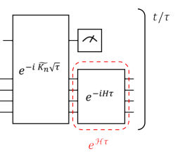
<figcaption class="paper-figure-caption"><b>Fig 1.</b> Figure 1: Quantum circuit used to simulate bulk dissipation for preparing the ground state ρ0 of H. Given input state ρ, the circuit approximates eLt[ρ]. Each dissipative part eLaτ is simulated using Stinespring dilation using an ancilla qubit, whose measurement result is discarded. Thus, it is not required to post-select on the measurement outcome.</figcaption>
</figure>
<figure class="paper-figure-card">
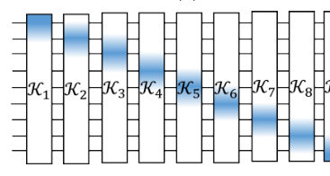
<figcaption class="paper-figure-caption"><b>Fig 2.</b> Figure 2: Circuit diagrams of Q</figcaption>
</figure>
<figure class="paper-figure-card">
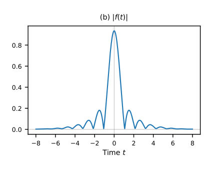
<figcaption class="paper-figure-caption"><b>Fig 3.</b> Figure 3: Filter function used in our numerical experiments. Left: The Fourier transform of the filter function ˆf(ω) in frequency space. It goes to 0 for positive ω to ensure that the jump operator maps to lower energy eigenstates. ˆf(ω) starts to decay at −∆so that any energy difference has a strong transition amplitude. Right: The magnitude of the filter function |f(t)| in time space. Its tails decay rapidly as |t| →∞.</figcaption>
</figure>
<figure class="paper-figure-card">

<figcaption class="paper-figure-caption"><b>Fig 4.</b> Figure 4: Theoretical upper bounds on query depth. Left: Comparisons on different localization radius r = 4, 10, 16. For relative energy error 10−3, the r = 4 implementation has query depth that is 53x lower than that in the sequential implementation. Notice that the stationary state deviates for lower values of r. Right: Query depth comparisons for single, boundary, and bulk dissipation. While the single and boundary dissipation methods have a lower circuit cost per simulation step, its mixing time is so large that the total cost is infeasible. Parallel bulk dissipation has the lowest query depth out of all of the implementations.</figcaption>
</figure>
<figure class="paper-figure-card">

<figcaption class="paper-figure-caption"><b>Fig 5.</b> Figure 5: Plot of different filter functions with varying δb parameter. Notice that larger values of δb give faster decay of |f(t)| but</figcaption>
</figure>
</div>

<p><strong>Summary.</strong> This paper introduces a parallelization scheme to significantly reduce the circuit depth required for dissipative quantum algorithms. By exploiting the geometric locality of the system, the authors enable the simultaneous application of multiple jump operators governing the system's evolution. This results in a substantial, polynomial improvement in the feasibility of running these algorithms on near-term quantum hardware.</p>
<p><strong>Why it may be interesting.</strong> This work directly addresses the practical implementation bottleneck of simulating open quantum systems, which is crucial for quantum simulation in AMO physics and quantum optics.</p>
<details>
<summary>Detailed structure</summary>
<p><strong>Main problem.</strong> The primary challenge is mitigating the high circuit depth associated with sequentially implementing the jump operators required for dissipative quantum algorithms.</p>
<p><strong>Main result.</strong> The authors propose a parallelization scheme leveraging geometric locality that achieves an exponential reduction in the circuit depth per time step, leading to overall polynomial improvements in feasibility.</p>
<p><strong>Method.</strong> The work analyzes a parallelization scheme for simulating Lindbladian evolution by executing jump operators simultaneously, contrasting this with sequential and single-jump dissipation methods.</p>
<p><strong>Model / system.</strong> The model involves open quantum systems whose dynamics are governed by the Lindbladian master equation. The system Hamiltonian is assumed to possess geometric locality, allowing the use of Lieb-Robinson bounds.</p>
<p><strong>Key observables.</strong> Circuit Depth (primary metric), Mixing Time, Total Depth, and Gate Complexity.</p>
<p><strong>Important parameters / regimes.</strong> System size (e.g., 100 qubits in 1D), error tolerances ($\epsilon, \epsilon'$), and time step parameters ($\Delta	au, s_M$).</p>
<p><strong>Assumptions / limitations.</strong> The Hamiltonian is assumed to be geometrically local, enabling the use of Lieb-Robinson bounds. The analysis also relies on specific approximations like the first-order Trotter formula for simplicity on near-term hardware.</p>
<p><strong>Figures summary.</strong> Table 1 compares the asymptotic query depth scaling for different dissipation methods, showing the benefit of parallelization. Figure 1 illustrates the quantum circuit used for ground state preparation via bulk dissipation.</p>
<p><strong>Paper structure.</strong> The paper progresses by defining the problem (Lindbladian simulation), proposing the parallelization strategy based on locality, deriving theoretical bounds on the resulting circuit depth, and validating the improvement with numerical experiments.</p>
</details>
<details>
<summary>Abstract</summary>
<p>Inspired by classical Markov Chain Monte Carlo (MCMC) methods, dissipative quantum algorithms are an emerging class of methods for preparing quantum states on a quantum computer. They operate by simulating a dissipative process governed by a mathematical operator known as the Lindbladian. The performance of these algorithms can be limited by the sequential implementation of the Lindbladian's constituent jump operators, which leads to high circuit depth. To address this issue, this work analyzes a parallelization scheme to implement jump operators simultaneously. We leverage the structure of geometric locality to show that individual jump operators remain spatially localized. This exponentially reduces the circuit depth per time step, resulting in an overall polynomial improvement. Numerical experiments demonstrate a 53x reduction in query depth for a 1D benchmark system of 100 qubits. The reduced circuit depth makes dissipative algorithms more practical for near-term quantum computing.</p>
</details>
<p><sub><a href="#top">↑ back to top</a></sub></p>

<p><a id="paper-2610.06203"></a></p>
<h3 id="interferometric-braiding-of-non-abelian-anyons"><a href="http://arxiv.org/abs/2610.06203v1">Interferometric braiding of non-Abelian anyons</a></h3>
<p><strong>Authors:</strong> Francesco Debortoli, Fabian Grusdt<br>
<strong>Type:</strong> both · <strong>Category:</strong> quantum information and computing · <strong>PDF:</strong> <a href="https://arxiv.org/pdf/2610.06203v1">https://arxiv.org/pdf/2610.06203v1</a><br>
<strong>Analysis basis:</strong> full PDF text, analyzed in chunks
<strong>Topic relevance:</strong> 🔥 <code>QC/QI experiment</code> <strong>4/5</strong> · <code>analog quantum simulation</code> <strong>3/5</strong> · <code>quantum measurements</code> <strong>3/5</strong> · <code>Full counting statistics</code> <strong>2/5</strong> · <code>interference shaping light</code> <strong>2/5</strong> · <code>driven-dissipative phase transition</code> <strong>1/5</strong> · <code>methods for driven-dissipative</code> <strong>1/5</strong> · <code>quantum optics experiment</code> <strong>1/5</strong></p>
<div class="figure-strip-hint">↔ Scroll figures horizontally</div>
<div class="paper-figures-scroll">
<figure class="paper-figure-card">

<figcaption class="paper-figure-caption"><b>Fig 1.</b> FIG. 1. Scheme of the proposed hybrid interface between the flying photonic qubit and the topological qubit. The topolog- ical qubit consists of excitations (represented as red vortices) on top of a 2D topologically ordered (TO) state. In a first step, the flying photonic qubit is used to initialize the spin qubit, encoded in the (pseudo-)spin state of the impurity. In a second step, the state of the spin qubit is encoded into the topological qubit using the braiding protocol detailed in the main text.</figcaption>
</figure>
<figure class="paper-figure-card">

<figcaption class="paper-figure-caption"><b>Fig 2.</b> FIG. 2. Top-down view of four Ising anyons of type σ. The dashed blue (purple) lines represent the braiding of anyons σ2 (σ1) and σ3 (σ2). This operation corresponds to the braiding operator ˆB23 ( ˆB12).</figcaption>
</figure>
<figure class="paper-figure-card">

<figcaption class="paper-figure-caption"><b>Fig 3.</b> FIG. 3. Probabilities of finding both impurities in the ↑state when the topological system is initialized in the state |0⟩top for Ising anyons. The probability pattern goes to zero for n = 0, 2 braiding operations (see blue and orange curves), while it is always nonzero for n = 1, 3 braiding operations (see red and purple dashed curves) — demonstrating the non- Abelian character of the anyons.</figcaption>
</figure>
<figure class="paper-figure-card">

<figcaption class="paper-figure-caption"><b>Fig 4.</b> FIG. 4. (a) Top-down view of three Fibonacci anyons of type τ. The dashed blue (purple) lines represent the braiding of anyons τ2 (τ1) and τ3 (τ2). This operation corresponds to the braiding operator ˆB23 ( ˆB12). (b) Probabilities of finding both impurities in the ↑state when the topological system is initialized in the state |0⟩top for Fibonacci anyons. The probability pattern goes to zero for n = 0 braiding operations (blue curve), while it is always nonzero for n = 1 braiding operations (orange curve) — demonstrating the non-Abelian character of the anyons.</figcaption>
</figure>
</div>

<p><strong>Summary.</strong> This paper presents a detailed, experimentally viable protocol using interlayer excitons in TMDs to braid non-Abelian anyons. By measuring interference patterns, the authors demonstrate a method to reconstruct the fundamental R and F matrices that characterize non-Abelian statistics. This work is crucial for realizing topological quantum computation by providing a pathway to encode conventional quantum information into a robust topological memory.</p>
<p><strong>Why it may be interesting.</strong> This work provides a highly tangible, solid-state platform (TMDs) for realizing and characterizing fundamental topological quantum phenomena, bridging abstract topological theory with solid-state experimental feasibility.</p>
<details>
<summary>Detailed structure</summary>
<p><strong>Main problem.</strong> The paper aims to develop and demonstrate a concrete, experimental protocol to measure the non-Abelian statistics of anyons and build a hybrid interface for topological quantum memory.</p>
<p><strong>Main result.</strong> The proposed interferometric braiding protocol successfully allows for the direct measurement of the R and F matrices characterizing non-Abelian statistics for Ising and Fibonacci anyons.</p>
<p><strong>Method.</strong> The method involves using mobile impurities (interlayer excitons) whose spin state acts as a conventional qubit, which are braided around non-Abelian anyons within a topologically ordered state.</p>
<p><strong>Model / system.</strong> The physical platform is based on interlayer excitons in Transition-Metal Dichalcogenides (TMDs) placed near a 2D topologically ordered state hosting the anyons. The protocol utilizes magnetic defects to achieve state-selective transport of the impurities.</p>
<p><strong>Key observables.</strong> The key observables are the interference probability patterns, specifically $p_{\uparrow\uparrow}(\phi)$ as a function of the control phase $\phi$ and the number of braiding operations $n$.</p>
<p><strong>Important parameters / regimes.</strong> The protocol relies on the binding energy $E_b$ and the ability to selectively trap/move impurities based on their spin state using defect potentials.</p>
<p><strong>Assumptions / limitations.</strong> The protocol assumes the ability to prepare specific initial states and relies on the magnetic defect breaking time-reversal symmetry to achieve valley selectivity for impurity transport.</p>
<p><strong>Figures summary.</strong> Figures illustrate the scheme of the hybrid interface (photonic to topological qubit), the setup for braiding multiple Ising anyons, and the resulting probability patterns $p_{\uparrow\uparrow}(\phi)$ for both Ising and Fibonacci anyons.</p>
<p><strong>Paper structure.</strong> The paper first introduces the general concept of using impurities for braiding, details the specific protocol steps (pulse sequence, movement), and then applies this to reconstruct the R and F matrices for Ising and Fibonacci anyons, concluding with the qubit encoding scheme.</p>
</details>
<details>
<summary>Abstract</summary>
<p>The manipulation of non-Abelian anyons is a foundational ingredient for topological quantum computing and underlies topologically protected quantum memories. Here we analyze a quantum-impurity-based protocol for braiding non-Abelian anyons. Exploiting mobile impurities with addressable internal spin states, we provide a concrete protocol to experimentally measure the matrix elements of the $R$ and $F$ matrices that characterize the non-Abelian statistics of anyons. In particular, focusing on the case of Ising and Fibonacci anyons, we illustrate how the anyonic nature of the excitations emerges directly in the Ramsey interferometer we propose. Building on this framework, we further introduce a conventional-to-topological qubit encoder to transfer quantum information from conventional flying qubits into a topologically protected quantum memory.</p>
</details>
<p><sub><a href="#top">↑ back to top</a></sub></p>

<p><a id="paper-2610.04331"></a></p>
<h3 id="state-selective-entanglement-and-point-gap-topology-in-the-unidirectional-bose-hubbard-chain"><a href="http://arxiv.org/abs/2610.04331v1">State-selective entanglement and point-gap topology in the unidirectional Bose-Hubbard chain</a></h3>
<p><strong>Authors:</strong> Chuan-Fu Lin, Yu-Chin Tzeng, Po-Yao Chang<br>
<strong>Type:</strong> theory · <strong>Category:</strong> quantum gases · <strong>PDF:</strong> <a href="https://arxiv.org/pdf/2610.04331v1">https://arxiv.org/pdf/2610.04331v1</a><br>
<strong>Analysis basis:</strong> full PDF text, analyzed in chunks
<strong>Topic relevance:</strong> 🔥 <code>methods for driven-dissipative</code> <strong>4/5</strong> · <code>analog quantum simulation</code> <strong>3/5</strong> · <code>driven-dissipative phase transition</code> <strong>3/5</strong> · <code>non-equilibrium universality</code> <strong>3/5</strong> · <code>Keldysh / 2PI / non-Gaussian methods</code> <strong>2/5</strong> · <code>correlated / nonlocal dissipation</code> <strong>1/5</strong> · <code>scars &amp; prethermalization</code> <strong>1/5</strong></p>
<div class="figure-strip-hint">↔ Scroll figures horizontally</div>
<div class="paper-figures-scroll">
<figure class="paper-figure-card">

<figcaption class="paper-figure-caption"><b>Fig 1.</b> FIG. 1. Large-system Bethe roots and complete finite-system spectra at ϵ = 1. Top: the 250 roots βj/t of the ground-connected branch at N = M = 250 and U/t = 1, 5, 5.83, 50. Bottom: all many-body energies from exact diagonalization at N = M = 8 for U/t = 1, 5, 50; colors label the integer momentum index k, with K = 2πk/N. Black stars mark the unique global largest-Im E eigenvalue in each spectrum. All three marked states belong to K = 0.</figcaption>
</figure>
<figure class="paper-figure-card">

<figcaption class="paper-figure-caption"><b>Fig 2.</b> FIG. 2. Flux-twisted many-body spectra and determinant winding with N = M = 8 and ϵ(ϕ) = eiϕ. Columns correspond to U/t = 1, 5, 50 in both rows. (a)–(c) Complete complex spectra, including all eight momentum blocks of the uniform-flux representative. Color denotes the closing-link phase: ϕj = 2πj/31, j = 0, . . . , 30, with 6435 energies per phase. (d)–(f) Determinant phase evolution for the same systems at three real reference energies, E⋆/t = 0, 5, 50. The vertical axis is the change of the unwrapped phase of DE⋆(ϕ) = det[H(ϕ) −E⋆], measured relative to ϕ = 0 and divided by 2π.</figcaption>
</figure>
<figure class="paper-figure-card">

<figcaption class="paper-figure-caption"><b>Fig 3.</b> FIG. 3. Second Ren´yi entropy and density of the ground state for N = M = 16 and ϵ = 0.1. Rows show the same parameter grids as Fig. 4: (a)–(c) weak coupling, U/t = 0.1, 0.2, . . . , 0.8; (d)–(f) intermediate coupling, U/t = 3, 4, . . . , 10; and (g)– (i) strong coupling, U/t = 20, 50, 100, 150. The left column gives second Ren´yi entropy as a function of subsystem size ℓA, ℓA = 1, . . . , 15. The middle column gives the physical density, and the right column gives the half-chain imbalance δn versus U/t.</figcaption>
</figure>
<figure class="paper-figure-card">

<figcaption class="paper-figure-caption"><b>Fig 4.</b> FIG. 4. Second Ren´yi entropy and density of the steady state for N = M = 16 and ϵ = 0.1. Rows show (a)–(c) weak coupling, U/t = 0.1, 0.2, . . . , 0.8; (d)–(f) intermediate coupling, U/t = 3, 4, . . . , 10; and (g)–(i) strong coupling, U/t = 20, 50, 100, 150. The left column gives the second Ren´yi entropy as a function of ℓA, ℓA = 1, . . . , 15. The middle column shows the normalized physical right-state density. The right column gives the half-chain imbalance δn of Eq. (15).</figcaption>
</figure>
<figure class="paper-figure-card">

<figcaption class="paper-figure-caption"><b>Fig 5.</b> FIG. 5. Particle-number fluctuations and projected entropies for the N = M = 16, ϵ = 0.1, K = 0 state-search with the largest imaginary energy at (a) U/t = 0.5, (b) U/t = 10, and (c) U/t = 50. Blue circles show SRR 2 (ℓA) on the left axis; orange squares show the subsystem variance VarRR(NA) of Eq. (22) on the right axis. Panels (b) and (c) additionally show the second R´enyi entanglement SRR|D 2 of the normalized global-D-projected state [Eq. (29), green diamonds] for D = 4 and D = 1, respectively. All entropies use natural logarithms. Separate axes retain the physical amplitudes; no curve is normalized to its maximum. Dotted lines in panel (b) mark the four strict SRR 2 maxima at ℓA = 3,...</figcaption>
</figure>
</div>

<p><strong>Summary.</strong> This work investigates the complex interplay between entanglement, topology, and interaction effects in the unidirectional Bose-Hubbard chain. By comparing the system's ground state to its long-time steady state, the authors show that entanglement properties are state-selective. The findings highlight that topological features and entanglement patterns in the steady state are distinct from those predicted by the ground state, offering deeper insights into non-equilibrium quantum dynamics.</p>
<p><strong>Why it may be interesting.</strong> It provides a detailed theoretical framework for analyzing non-equilibrium steady states in interacting quantum systems, which is highly relevant for understanding open quantum systems dynamics beyond simple ground-state approximations.</p>
<details>
<summary>Detailed structure</summary>
<p><strong>Main problem.</strong> The study aims to distinguish state-selective entanglement and point-gap topology from ground-state properties in the context of the unidirectional Bose-Hubbard chain.</p>
<p><strong>Main result.</strong> The steady state exhibits nonmonotonic entanglement crossovers, and the entanglement structure is captured by projecting onto specific onsite-pair manifolds, differing significantly from the ground state's behavior.</p>
<p><strong>Method.</strong> The authors compare the ground state (real-energy minimization) with the steady state (largest imaginary-energy eigenstate) by calculating entanglement entropy and analyzing spectral topology via winding numbers.</p>
<p><strong>Model / system.</strong> The system is the unidirectional Bose-Hubbard chain, described by a Hamiltonian involving hopping ($t$) and repulsive interactions ($U$). The analysis covers various coupling regimes, including weak, intermediate, and strong coupling.</p>
<p><strong>Key observables.</strong> Second Rényi entropy, density imbalance ($\delta n$), many-body winding number, and the comparison between ground-state and steady-state observables.</p>
<p><strong>Important parameters / regimes.</strong> Interaction strength ratio ($U/t$), filling factor (unit filling), and the boundary parameter $\epsilon$.</p>
<p><strong>Assumptions / limitations.</strong> The comparison between the ground state and the steady state is a central focus, as they are generally different states.</p>
<p><strong>Figures summary.</strong> Figures illustrate Bethe roots and spectra across coupling regimes, showing density profiles and entanglement entropy calculations for both ground and steady states.</p>
<p><strong>Paper structure.</strong> The paper progresses by first establishing the model and comparing ground state vs. steady state properties, then detailing entanglement analysis using manifold projections, and finally contrasting the topological signatures (winding number) between the two states.</p>
</details>
<details>
<summary>Abstract</summary>
<p>We study the effect of repulsive interactions on skin modes and entanglement in the unidirectional Bose--Hubbard model. Although the ground state of this integrable model undergoes a superfluid--Mott transition with suppressed skin accumulation, the corresponding change in entanglement depends on the selected many-body state. We compare the ground state with the steady state, defined as the largest-imaginary-energy eigenstate in the zero-momentum sector. For sixteen sites at unit filling, we find that the ground-state density approaches uniform filling and its entanglement decreases toward the Mott limit, whereas the steady states exhibit a nonmonotonic entanglement crossover. At intermediate interaction ($U/t=10$), the second Rényi entropy of the steady state develops four spatial maxima. We show that these maxima are accounted for by competing subsystem-number sectors within a dominant configuration manifold of four doublons and four holons, but not by the subsystem particle-number variance alone. The dominant global onsite-pair manifold retains the same entropy peak structure. At strong interaction, projection onto the one-doublon--one-holon manifold closely reproduces the full entropy profile and its two edge peaks. Furthermore, we demonstrate that the many-body winding about the origin remains nonzero at strong interaction; an exact two-site example shows how it becomes ill-defined in the singular projected $U/t\to\infty$ limit. Our results distinguish ground-state skin suppression from state-selective entanglement and point-gap topology.</p>
</details>
<p><sub><a href="#top">↑ back to top</a></sub></p>

<p><a id="paper-2610.06451"></a></p>
<h3 id="a-programmable-quantum-photonic-platform-integrating-coherent-emitters"><a href="http://arxiv.org/abs/2610.06451v1">A programmable quantum photonic platform integrating coherent emitters</a></h3>
<p><strong>Authors:</strong> Hanna Salamon, Mikkel T. Mikkelsen, Zhe Liu, Peter Lodahl, Severin Krüger, Arne Ludwig, Leonardo Midolo<br>
<strong>Type:</strong> experiment · <strong>Category:</strong> quantum information and computing · <strong>PDF:</strong> <a href="https://arxiv.org/pdf/2610.06451v1">https://arxiv.org/pdf/2610.06451v1</a><br>
<strong>Analysis basis:</strong> full PDF text, analyzed in chunks
<strong>Topic relevance:</strong> 🔥 <code>QC/QI experiment</code> <strong>4/5</strong> · 🔥 <code>quantum optics experiment</code> <strong>4/5</strong> · <code>interference shaping light</code> <strong>3/5</strong> · <code>analog quantum simulation</code> <strong>2/5</strong> · <code>quantum measurements</code> <strong>2/5</strong> · <code>Tavis-Cummings &amp; cavity-many-emitter</code> <strong>1/5</strong></p>
<div class="figure-strip-hint">↔ Scroll figures horizontally</div>
<div class="paper-figures-scroll">
<figure class="paper-figure-card">

<figcaption class="paper-figure-caption"><b>Fig 1.</b> FIG. 1. Programmable GaAs platform for quantum photonics. (a.) Illustration of the integrated platform based on GaAs p-i-n membrane and the individual components. (b.) Schematic of the electrical interconnects to simultaneously drive QDs and NEMS. The NEMS reference voltage (REF) is used to suppress the diode built-in field across the circuit. (c.) Measured current-voltage characteristics for QD diode and NEMS. (d.) Optical stack and processing steps. (e.) Photograph of a fabricated chip (scale bar is 1 mm).</figcaption>
</figure>
<figure class="paper-figure-card">

<figcaption class="paper-figure-caption"><b>Fig 2.</b> FIG. 2. Operation of the nanomechanical router with single photons. (a.) The QD is excited from the top, and the emitted photons are routed through the NEMS device and detected at the two output grating couplers using independent SNSPDs. (b.) Zoom-in of the NEMS switch. (c.) Second-order correlation histogram at VNEMS = −10 V, showing suppression of the zero-delay peak. (d.)(I) Voltage-dependent output count rates;(II) areas of the central (Acenter) and side (Aside) peaks extracted from the second-order correlation measurements; (III) g(2)(0) = Acenter/Aside, showing high single-photon purity throughout the tuning range, with an average value of (0.62 ± 0.07)%. The upper x-axis shows the...</figcaption>
</figure>
<figure class="paper-figure-card">

<figcaption class="paper-figure-caption"><b>Fig 3.</b> FIG. 3. Quantum dot single photon source integrated with nanomechanical router. (a.) Upper panel: Resonance fluorescence spectrum of a single quantum-dot exciton transition measured under resonant continuous-wave excitation. A Voigt profile fit (orange) yields a full width at half maximum of ΓRF = (351.8 ± 28.0) MHz. Lower panel: Time-resolved fluorescence under resonant π-pulse excitation. A single-exponential model convolved with the instrument response function (IRF) yields a decay rate of γ = (1.55±0.08) ns−1, corresponding to a transform-limited linewidth of 246.2±13.3 MHz. (b.) Schematic of the two photon interference setup, in which NEMS serve as the first beam splitter. (c.)...</figcaption>
</figure>
<figure class="paper-figure-card">

<figcaption class="paper-figure-caption"><b>Fig 4.</b> FIG. 4. Simultaneous tunability of two independent quantum-dot sources. (a.) Collected emission from QD1, located in the upper source segment, as the bias voltage VQD1 is swept from 1.24 V to 1.28 V. During the sweep, QD2 in the lower source segment is biased at VQD2 = 1.2265 V while a narrowband continuous-wave (cw) laser is scanned across the QD2 resonance at fres = 323.367721 THz. (b.) Spectral overlap of the two quantum-dot transitions at the crossing frequency fres. The corresponding bias voltages are VQD1 = 1.261 V and VQD2 = 1.2265 V. Individual Voigt fits yield linewidths of ΓQD1 = (818 ± 23) MHz and ΓQD2 = (632 ± 56) MHz. (c.) Second-order correlation mea- surement between photons...</figcaption>
</figure>
<figure class="paper-figure-card">

<figcaption class="paper-figure-caption"><b>Fig 5.</b> FIG. 5. Nanomechanical routing for resonant scattering measurements. (a.) Schematic of single- and multi-photon scattering from a two-level emitter in a photonic crystal waveguide. Single photons are coherently reflected, whereas multi- photon components are predominantly transmitted due to emitter saturation (b.) Scheme of the resonant reflection (RR) and resonant transmission (RT) measurements using nanomechnical router. (c.) Reflection and transmission count rates versus NEMS actuation voltage, with minimum transmission leakage at VNEMS = −19 V.(d.) RR and RT maps recorded at VNEMS = −19 V as a function of excitation laser detuning and quantum-dot bias voltage.(e.) Representative RR and...</figcaption>
</figure>
</div>

<p><strong>Summary.</strong> This paper presents a programmable quantum photonic platform integrating quantum dot emitters with a reconfigurable nanomechanical router on a single chip. The system successfully demonstrates key quantum functionalities, including single-photon generation and two-photon interference, while maintaining high coherence. This work advances the field from isolated quantum devices toward functional, large-scale quantum hardware.</p>
<p><strong>Why it may be interesting.</strong> This work provides a concrete, hardware-level realization of integrated quantum light sources coupled to reconfigurable elements, which is a crucial engineering step toward scalable quantum photonic circuits.</p>
<details>
<summary>Detailed structure</summary>
<p><strong>Main problem.</strong> The primary challenge is integrating high-quality, coherent quantum light sources (like quantum dots) with programmable, cryogenic-compatible photonic circuitry for on-chip quantum information processing.</p>
<p><strong>Main result.</strong> The authors demonstrated a programmable platform capable of generating pure single photons and achieving two-photon interference while actively routing light using a nanomechanical element.</p>
<p><strong>Method.</strong> The research involves characterizing quantum light sources using Hanbury Brown-Twiss measurements and demonstrating active control over photon paths and interactions using a NEMS-based photonic router.</p>
<p><strong>Model / system.</strong> The system is a programmable quantum photonic platform built on a GaAs chip, integrating individually tunable quantum dot emitters and a reconfigurable NEMS-based photon router, all operating at cryogenic temperatures.</p>
<p><strong>Key observables.</strong> Single-photon purity ($g^{(2)}(0)$), two-photon interference visibility, resonance linewidth ($\Gamma_{RF}$), and transmission/reflection spectra.</p>
<p><strong>Important parameters / regimes.</strong> Cryogenic temperatures ($\approx 5$ K), low propagation losses ($\le 7 	ext{ dB mm}^{-1}$), and high coherence confirmed by linewidth measurements.</p>
<p><strong>Assumptions / limitations.</strong> The primary limitations for scaling are identified as cryogenic packaging and electrical/optical interfacing, rather than the underlying photonic architecture.</p>
<p><strong>Figures summary.</strong> Figures illustrate the platform components, I-V curves, single-photon purity measurements ($g^{(2)}(0)$), and demonstrate quantum interference and resonant scattering using the NEMS router.</p>
<p><strong>Paper structure.</strong> The paper systematically introduces the platform, characterizes the quantum sources (single-photon purity, coherence), demonstrates active routing and interference, and finally explores nonlinear quantum optical responses like resonant scattering.</p>
</details>
<details>
<summary>Abstract</summary>
<p>Photonic quantum technologies require the integration of high-quality quantum light sources with programmable photonic circuitry to enable on-chip quantum information processing. Semiconductor quantum dots have emerged as a leading platform for quantum light generation, yet their monolithic integration with cryogenic-compatible, programmable photonic circuitry remains challenging. Here we demonstrate a programmable quantum photonic platform that enables simultaneous control of highly coherent quantum dot-based single photon emitters and reconfigurable optical elements at cryogenic temperatures. System-level integration enables individual electrical and optical addressing of active components on a single chip, allowing their concurrent operation while preserving coherent non-classical light emission. We demonstrate multiple quantum-photonic functionalities, including pure single-photon generation, two-photon interference, and resonant transmission and reflection measurements of integrated emitters. These results mark a step from isolated quantum-optical devices towards programmable quantum-photonic hardware platforms capable of combining coherent quantum emitters with large-scale photonic functionality.</p>
</details>
<p><sub><a href="#top">↑ back to top</a></sub></p>

<p><a id="paper-2610.06769"></a></p>
<h3 id="fast-convergence-of-propagation-algorithms-for-open-quantum-systems"><a href="http://arxiv.org/abs/2610.06769v1">Fast convergence of propagation algorithms for open quantum systems</a></h3>
<p><strong>Authors:</strong> Giorgio Facelli, Hamza Fawzi, Omar Fawzi, Cambyse Rouzé, Sam Slezak, Daniel Stilck França<br>
<strong>Type:</strong> theory · <strong>Category:</strong> statistical mechanics · <strong>PDF:</strong> <a href="https://arxiv.org/pdf/2610.06769v1">https://arxiv.org/pdf/2610.06769v1</a><br>
<strong>Analysis basis:</strong> full PDF text, analyzed in chunks
<strong>Topic relevance:</strong> 🔥 <code>methods for driven-dissipative</code> <strong>4/5</strong> · <code>Keldysh / 2PI / non-Gaussian methods</code> <strong>3/5</strong> · <code>driven-dissipative phase transition</code> <strong>3/5</strong> · <code>correlated / nonlocal dissipation</code> <strong>2/5</strong> · <code>non-equilibrium universality</code> <strong>2/5</strong> · <code>analog quantum simulation</code> <strong>1/5</strong> · <code>quantum measurements</code> <strong>1/5</strong></p>
<div class="figure-strip-hint">↔ Scroll figures horizontally</div>
<div class="paper-figures-scroll">
<figure class="paper-figure-card">

<figcaption class="paper-figure-caption"><b>Fig 1.</b> Low-resolution page preview, page 2</figcaption>
</figure>
<figure class="paper-figure-card">

<figcaption class="paper-figure-caption"><b>Fig 2.</b> Low-resolution page preview, page 3</figcaption>
</figure>
<figure class="paper-figure-card">

<figcaption class="paper-figure-caption"><b>Fig 3.</b> Low-resolution page preview, page 4</figcaption>
</figure>
<figure class="paper-figure-card">

<figcaption class="paper-figure-caption"><b>Fig 4.</b> Low-resolution page preview, page 5</figcaption>
</figure>
<figure class="paper-figure-card">

<figcaption class="paper-figure-caption"><b>Fig 5.</b> Low-resolution page preview, page 6</figcaption>
</figure>
</div>

<p><strong>Summary.</strong> This paper develops general theoretical frameworks to ensure the efficient classical simulation of quantum many-body systems, focusing on calculating local observable expectation values. It establishes convergence criteria for propagation algorithms applied to both noisy time evolution and thermal equilibrium states. The results significantly extend the known time scales for efficient simulation in weakly interacting quantum systems.</p>
<p><strong>Why it may be interesting.</strong> This work directly addresses the computational bottleneck in simulating open quantum systems by providing rigorous, general conditions under which classical simulation techniques remain efficient, particularly in the weakly interacting regime.</p>
<details>
<summary>Detailed structure</summary>
<p><strong>Main problem.</strong> The paper establishes general conditions for the rapid convergence of propagation algorithms used to compute expectation values of local observables in quantum many-body systems.</p>
<p><strong>Main result.</strong> The analysis provides bounds for the simulation time horizon ($t_{	ext{max}}$) for both noisy time evolution and computation of thermal expectation values, extending known efficient simulation limits.</p>
<p><strong>Method.</strong> The core method involves using contraction-based analysis with weighted norms to control the error introduced by truncating the propagation algorithm (e.g., Dyson or short-time step expansions).</p>
<p><strong>Model / system.</strong> The study covers open quantum systems, applicable to both spin and fermionic systems, modeled by Hamiltonians $H = H_0 + uV$. Applications include noisy time evolution and calculating expectation values in Gibbs states via a pseudo-Lindbladian.</p>
<p><strong>Key observables.</strong> Expectation values of local observables, expanded as Majorana monomials ($\gamma_S$).</p>
<p><strong>Important parameters / regimes.</strong> Interaction strength ($u$), noise strength ($\lambda$), inverse temperature ($eta$), and the time horizon ($t_{	ext{max}}$).</p>
<p><strong>Assumptions / limitations.</strong> The Hamiltonian must be sufficiently contractive, and the analysis relies on structural assumptions regarding the sparsity ($\Delta$-sparsity) of the Hamiltonian and the use of specific weighted norms.</p>
<p><strong>Paper structure.</strong> The paper is structured around establishing general convergence theorems (for dissipative dynamics and thermal expectations) and then applying these techniques to specific physical models, such as noisy evolution and pseudo-Lindbladian generators.</p>
</details>
<details>
<summary>Abstract</summary>
<p>We establish general conditions for the rapid convergence of propagation algorithms for computing expectation values of local observables in quantum many-body systems, covering both spin and fermionic systems. Our results apply to evolutions that are sufficiently contractive, providing a general mechanism by which contractivity controls the growth generated by local interactions and enables efficient classical simulation. As a first application, we consider noisy time evolution generated by local Hamiltonians on arbitrary interaction graphs. We show that the dynamics can be efficiently simulated when the noise strength $λ$ is sufficiently large compared to the degree of the interaction graph. More generally, for systems with an interaction strength $u$, our bounds determine a time horizon $t_{\text{max}}$ as a function of the interaction strength $u$, the noise strength $λ$, and the interaction structure below which the algorithm is efficient. In the noiseless limit, $λ=0$, our analysis extends the efficiently simulable time scale from $\log(1/u)$ proved in Facelli, Fawzi, and Fawzi (2026) to $t_{\text{max}} \sim 1/u$ matching the recent improvement by Zhao, Marvian and Tong (2026). As a second application, we apply the same framework to the computation of local observables in Gibbs states of local Hamiltonians. We consider a pseudo-Lindbladian whose steady state is the Gibbs state and show that, at sufficiently high temperature, its propagation algorithm converges rapidly. In particular, for weakly-interacting systems with interaction strength $u$, our result applies up to inverse temperatures $β\sim\log(1/u)$.</p>
</details>
<p><sub><a href="#top">↑ back to top</a></sub></p>

<p><a id="paper-2610.06793"></a></p>
<h3 id="imaginary-magnetic-fields-for-ultracold-atoms"><a href="http://arxiv.org/abs/2610.06793v1">Imaginary magnetic fields for ultracold atoms</a></h3>
<p><strong>Authors:</strong> Saulius Alminas, Domantas Burba, Gediminas Juzeliūnas<br>
<strong>Type:</strong> theory · <strong>Category:</strong> other · <strong>PDF:</strong> <a href="https://arxiv.org/pdf/2610.06793v1">https://arxiv.org/pdf/2610.06793v1</a><br>
<strong>Analysis basis:</strong> full PDF text, analyzed in chunks
<strong>Topic relevance:</strong> 🔥 <code>analog quantum simulation</code> <strong>4/5</strong> · <code>driven-dissipative phase transition</code> <strong>3/5</strong> · <code>methods for driven-dissipative</code> <strong>3/5</strong> · <code>Keldysh / 2PI / non-Gaussian methods</code> <strong>2/5</strong> · <code>non-equilibrium universality</code> <strong>2/5</strong> · <code>correlated / nonlocal dissipation</code> <strong>1/5</strong> · <code>quantum measurements</code> <strong>1/5</strong></p>
<div class="figure-strip-hint">↔ Scroll figures horizontally</div>
<div class="paper-figures-scroll">
<figure class="paper-figure-card">

<figcaption class="paper-figure-caption"><b>Fig 1.</b> FIG. 1. Proposed coupling scheme. (a) Raman-coupled system states with independent auxiliary removal channels. The coherent couplings are ΩR and ωλ, and κλ are auxiliary state decay rates. (b) Effective two-level description with purely imaginary detunings ±i∆(x)/2. The state-independent loss term −iΓ(x)/2 featured in Eq. (4) is not shown here.</figcaption>
</figure>
<figure class="paper-figure-card">

<figcaption class="paper-figure-caption"><b>Fig 2.</b> FIG. 2. Center of mass dynamics. (a) Trajectories of an initially centered Gaussian wavepacket for a range of launch momenta ky0/kR. (b) Corresponding x center of mass evo- lution, with fixed width kRσ = kRσx = kRσy = 3/ √</figcaption>
</figure>
<figure class="paper-figure-card">

<figcaption class="paper-figure-caption"><b>Fig 3.</b> FIG. 3. Density evolution. Results are obtained by exact numerics of the projected model using precise form of Ax given by Eq. (A20). (a) Density profiles for an initially centered Gaussian wave packet with kx0 = 0 and ky0 = 0. (b) Same as in (a), but for ky0 = 0.75 kR. Snapshots are shown at the times indicated in the panels. Here kRσx = kRσy = 3/ √</figcaption>
</figure>
<figure class="paper-figure-card">

<figcaption class="paper-figure-caption"><b>Fig 4.</b> FIG. 4. Imaginary Aharonov-Bohm transport. (a) Localized trapped mode transported along closed elliptical paths in op- posite orientations, indicated by the arrows. Dashed curves show paths with smaller enclosed areas. (b) Background-loss- removed norm, eΓ0T N(T)/N(0), after one cycle as a function of the unsigned enclosed area A for clockwise and counterclock- wise transport. Markers show finite-time numerical evolution retaining the full Ax, while solid curves show the adiabatic quadratic prediction. The inset shows ln[NCCW(T)/NCW(T)], with the prediction of Eq. (39). Here TωR = 20, η/kR = 0.01, (Ωx, Ωy)/ωR = (8, 10), kRRx = 1.5, and Ry is varied to change the enclosed area.</figcaption>
</figure>
<figure class="paper-figure-card">

<figcaption class="paper-figure-caption"><b>Fig 5.</b> FIG. 5. Validity of the adiabatic description. Color shows (a) ωRt99 and (b) ωRt90, the first times at which the normalized fidelity between the two-level state and the reconstructed effective spinor falls to 0.99 and 0.9, respectively. The initial envelopes are centered Gaussians with kx0 = ky0 = 0 and kRσx = kRσy = 3/ √</figcaption>
</figure>
</div>

<p><strong>Summary.</strong> This paper details a method to create a uniform imaginary magnetic field for ultracold atoms using a dissipative Raman coupling scheme. The authors derive the effective dynamics using adiabatic projection and analyze the resulting quantum transport properties. It provides a theoretical framework for manipulating atomic motion in synthetic gauge fields while accounting for particle losses.</p>
<p><strong>Why it may be interesting.</strong> This work is highly relevant as it combines concepts from open quantum systems (dissipation/losses), synthetic gauge fields (imaginary magnetic fields), and advanced quantum dynamics (adiabatic theorems) within the context of ultracold atoms.</p>
<details>
<summary>Detailed structure</summary>
<p><strong>Main problem.</strong> The paper addresses the generation and study of quantum dynamics under a uniform imaginary magnetic field for ultracold atoms.</p>
<p><strong>Main result.</strong> They successfully derive the dynamics using an adiabatic projection method, confirming the generation of a constant imaginary synthetic magnetic field and analyzing the resulting Gaussian wavepacket evolution.</p>
<p><strong>Method.</strong> The study employs adiabatic projection techniques to derive an effective Hamiltonian for the system, followed by solving the resulting non-Hermitian dynamics using Gaussian wavepacket ansatzes.</p>
<p><strong>Model / system.</strong> The system involves ultracold atoms manipulated via a four-level Raman coupling scheme, which introduces state-dependent particle losses, leading to an effective non-Hermitian Hamiltonian.</p>
<p><strong>Key observables.</strong> Surviving fraction of atoms, position and momentum expectation values, position covariance matrix, and the normalized fidelity between full and effective state evolutions.</p>
<p><strong>Important parameters / regimes.</strong> The imaginary magnetic field strength ($B_s$), the loss rate ($\Gamma_0$), and the initial wavepacket width ($\sigma$).</p>
<p><strong>Assumptions / limitations.</strong> The analysis heavily relies on the adiabatic approximation, assuming the energy gap between dressed states remains large compared to non-adiabatic couplings.</p>
<p><strong>Figures summary.</strong> Figures illustrate the coupling scheme, center-of-mass trajectories showing dependence on launch momentum and initial width, and the normalized fidelity decay curves used to quantify the validity of the adiabatic approximation.</p>
<p><strong>Paper structure.</strong> The paper progresses from proposing the physical scheme and deriving the effective Hamiltonian via projection, to analyzing the resulting non-Hermitian dynamics using Gaussian wavepackets, and finally validating the adiabatic approach through fidelity measurements and studying cyclic transport.</p>
</details>
<details>
<summary>Abstract</summary>
<p>We propose a four-level scheme for generating a uniform imaginary magnetic field for ultracold atoms using Raman coupling and state-dependent particle losses. Eliminating two lossy auxiliary states and subsequently projecting onto one of the two remaining Raman dressed atomic states, the atomic motion is affected by an imaginary vector potential with a constant curl corresponding to a spatially uniform imaginary synthetic magnetic field. We analytically derive the Gaussian wavepacket dynamics for atoms in such a synthetic magnetic field and study the width-dependent transport, which is unique to non-Hermitian systems. We find numerical agreement between the two-level non-Hermitian Hamiltonian and the adiabatic projection description, confirming the applicability of the latter adiabatic approach.</p>
</details>
<p><sub><a href="#top">↑ back to top</a></sub></p>

<p><a id="paper-2610.05454"></a></p>
<h3 id="game-of-nons-non-gaussian-nonunitary-environments-with-nonlinear-coupling"><a href="http://arxiv.org/abs/2610.05454v1">Game of Nons: Non-Gaussian Nonunitary Environments with Nonlinear Coupling</a></h3>
<p><strong>Authors:</strong> Artem Karasev, Alexander Teretenkov<br>
<strong>Type:</strong> theory · <strong>Category:</strong> other · <strong>PDF:</strong> <a href="https://arxiv.org/pdf/2610.05454v1">https://arxiv.org/pdf/2610.05454v1</a><br>
<strong>Analysis basis:</strong> full PDF text, analyzed in chunks
<strong>Topic relevance:</strong> 🔥 <code>Keldysh / 2PI / non-Gaussian methods</code> <strong>4/5</strong> · <code>correlated / nonlocal dissipation</code> <strong>3/5</strong> · <code>methods for driven-dissipative</code> <strong>3/5</strong> · <code>driven-dissipative phase transition</code> <strong>2/5</strong> · <code>quantum measurements</code> <strong>2/5</strong> · <code>non-equilibrium universality</code> <strong>1/5</strong></p>
<div class="figure-strip-hint">↔ Scroll figures horizontally</div>
<div class="paper-figures-scroll">
<figure class="paper-figure-card">

<figcaption class="paper-figure-caption"><b>Fig 1.</b> FIG. 1. Interaction-picture Pauli expectation values (a) ⟨σx(t)⟩, (b) ⟨σy(t)⟩, and (c) ⟨σz(t)⟩at η = 0.5 and g = 0.000567029. The numerical solution is black, TCL2 blue, and TCL4 orange. Solid curves correspond to the Fock environment and dashed curves to the thermal environment. Parameters and initial states are specified in Sec. VI.</figcaption>
</figure>
<figure class="paper-figure-card">

<figcaption class="paper-figure-caption"><b>Fig 2.</b> FIG. 2. Purity P(t) = Tr ρ2(t) for the same environments, coupling, initial states and curve conventions as in Fig. 1.</figcaption>
</figure>
<figure class="paper-figure-card">

<figcaption class="paper-figure-caption"><b>Fig 3.</b> FIG. 3. Maximum trace-distance errors E2(η) and E4(η) for the Fock and thermal environments. The maxima are evalu- ated on the sampled time grid.</figcaption>
</figure>
<figure class="paper-figure-card">

<figcaption class="paper-figure-caption"><b>Fig 4.</b> Figure 3 shows how the maximum trace-distance error varies with coupling strength. TCL4 improves accuracy for both environments at every displayed coupling. At η = 0.5, the error decreases relative to TCL2 by approx- imately a factor of 20 for the Fock environment and a factor of 2 for the thermal environment.</figcaption>
</figure>
</div>

<p><strong>Summary.</strong> This paper introduces a perturbative framework to calculate the time evolution of quantum systems coupled to bosonic environments with quadratic interactions. It achieves this by mapping the calculation of complex environmental correlation functions onto derivatives of the initial characteristic function. This method allows for the systematic, high-order determination of the reduced system dynamics, which is crucial for understanding open quantum systems.</p>
<p><strong>Why it may be interesting.</strong> This work provides a powerful, systematic, and generalizable theoretical tool for calculating open quantum system dynamics, particularly useful for systems where the environment correlation functions are complex or non-Gaussian.</p>
<details>
<summary>Detailed structure</summary>
<p><strong>Main problem.</strong> The paper develops a perturbative framework to calculate the reduced dynamics (time-local generator) for quantum systems coupled quadratically to bosonic environments.</p>
<p><strong>Main result.</strong> The method successfully constructs the time-local generator $K(t)$ to arbitrary perturbative order by relating environmental correlation functions to derivatives of the initial characteristic function.</p>
<p><strong>Method.</strong> It employs a combination of the projection-operator approach, working in a doubled operator space, and utilizing the characteristic function representation to calculate ordered multitime environmental correlation functions.</p>
<p><strong>Model / system.</strong> The system is an open quantum system ($H_A \otimes H_B$) where the system $A$ interacts quadratically with a bosonic environment $B$. The dynamics are governed by a master equation involving quadratic Hamiltonians and linear Lindblad operators.</p>
<p><strong>Key observables.</strong> Ordered multitime environmental correlation functions, the time-local generator $K(t)$, and environmental moments $M_N(t)$.</p>
<p><strong>Important parameters / regimes.</strong> The coupling strength $\lambda$, the order of perturbation theory $N$, and the environmental correlation time scales.</p>
<p><strong>Assumptions / limitations.</strong> The coupling is assumed to be quadratic, the environment has quadratic Hamiltonians, and the free dynamics of subsystem A are assumed unitary.</p>
<p><strong>Figures summary.</strong> The notes do not describe specific figures, but mention reliance on numerous mathematical equations (e.g., Eq. 28, Eq. 47, Eqs. D4-D6e) to present derivations.</p>
<p><strong>Paper structure.</strong> The paper builds mathematically, first establishing the formalism using the characteristic function and doubled operator space to calculate environmental moments, and then applying this machinery to recursively construct the time-local generator $K(t)$ in the Time-Convolutionless form.</p>
</details>
<details>
<summary>Abstract</summary>
<p>We develop a perturbative framework for systems coupled quadratically to bosonic environments with quadratic Hamiltonians and linear Lindblad operators. The method applies to both single-mode and multimode environments whose initial states may be non-Gaussian and nonstationary. By combining linear evolution in a doubled operator space with a characteristic-function representation, we express ordered multitime environmental correlation functions in terms of derivatives of the initial characteristic function. These correlation functions enter a recursive construction of the time-convolutionless generator at arbitrary finite order. We illustrate the method with a qubit coupled to a damped mode via a two-photon interaction. Initial Fock and thermal states with identical first and second field moments produce different second-order generators through their fourth moments.</p>
</details>
<p><sub><a href="#top">↑ back to top</a></sub></p>

<p><a id="paper-2610.05362"></a></p>
<h3 id="shallow-quantum-circuits-for-geometrically-local-lindblad-dynamics"><a href="http://arxiv.org/abs/2610.05362v1">Shallow Quantum Circuits for Geometrically Local Lindblad Dynamics</a></h3>
<p><strong>Authors:</strong> Zheyu Shen, Yusen Wu, Xiao Yuan, Yukun Zhang<br>
<strong>Type:</strong> theory · <strong>Category:</strong> quantum information and computing · <strong>PDF:</strong> <a href="https://arxiv.org/pdf/2610.05362v1">https://arxiv.org/pdf/2610.05362v1</a><br>
<strong>Analysis basis:</strong> full PDF text, analyzed in chunks
<strong>Topic relevance:</strong> 🔥 <code>methods for driven-dissipative</code> <strong>4/5</strong> · <code>correlated / nonlocal dissipation</code> <strong>3/5</strong> · <code>driven-dissipative phase transition</code> <strong>3/5</strong> · <code>non-equilibrium universality</code> <strong>2/5</strong> · <code>Keldysh / 2PI / non-Gaussian methods</code> <strong>1/5</strong> · <code>analog quantum simulation</code> <strong>1/5</strong> · <code>quantum measurements</code> <strong>1/5</strong></p>
<div class="figure-strip-hint">↔ Scroll figures horizontally</div>
<div class="paper-figures-scroll">
<figure class="paper-figure-card">

<figcaption class="paper-figure-caption"><b>Fig 1.</b> Figure 1: The HHKL overlap convention: UBC, U † B, then UAB act on shared retained baths. Equation (7) compares this initialized isometry with the full collision dilation.</figcaption>
</figure>
<figure class="paper-figure-card">

<figcaption class="paper-figure-caption"><b>Fig 2.</b> Figure 2: Schematic colour layer in one dimension (not to scale for general R, r∗). Bold owner cubes BC, BC′ share a colour; shaded support envelopes and dashed complete hosts are disjoint. Hosts include environment, work and routing positions. Same-colour owners differ by at least eight coarse cells in some coordinate in dimension D. The comparison uses Ωc = S</figcaption>
</figure>
<figure class="paper-figure-card">

<figcaption class="paper-figure-caption"><b>Fig 3.</b> Figure 3: Execution order in Eq. (24): Q, private phase, input tree from leaves to root, root rotation, and inverse output tree to leaves. The different tree rotations depend on a preserved address prefix and the bath configuration after Q, the only operation changing a bath value. Permanent labels are fixed. Section 5 supplies register operations and costs.</figcaption>
</figure>
<figure class="paper-figure-card">

<figcaption class="paper-figure-caption"><b>Fig 4.</b> Figure 4: Four-leaf input tree, with occurrence indices 1, . . . , 4 encoded as addresses 00, 01, 10, 11. Each node rotates its two child representatives; the orthogonal coordinates remain present. The first level acts on (00, 01) and (10, 11) with potentially different angles. The second acts on (00, 10). All rotations are in the private Q = 0 sector and are controlled by the bath configuration after Q. The inverse output tree has the same pairs in reverse level order, with the transposed OAB rotations instead of IAB. The edges describe the recursion, not physical data movement.</figcaption>
</figure>
</div>

<p><strong>Summary.</strong> This paper presents a quantum algorithm to simulate open-system dynamics governed by Lindblad equations on a lattice. By employing a shared unitary dilation to manage environmental information, the authors achieve resource scaling for gate count and depth that matches the best known bounds for unitary evolution. This advances the field by providing efficient quantum simulation tools for dissipative quantum many-body systems.</p>
<p><strong>Why it may be interesting.</strong> This work provides a rigorous, resource-efficient quantum algorithm for simulating dissipative processes, which is crucial for modeling realistic quantum devices where decoherence is dominant.</p>
<details>
<summary>Detailed structure</summary>
<p><strong>Main problem.</strong> The paper addresses the challenge of simulating open-system dynamics governed by Lindblad operators using quantum circuits.</p>
<p><strong>Main result.</strong> They propose an algorithm achieving resource scaling matching Hamiltonian simulation, providing both upper bounds (gate count and depth) and matching lower bounds for time-independent, finite-range Lindblad dynamics.</p>
<p><strong>Method.</strong> The core method involves using a common unitary dilation to handle the environment, circumventing the lack of reversible overlap corrections for dissipative channels, and employing techniques like dyadic factorization.</p>
<p><strong>Model / system.</strong> The model is an open quantum system on a constant-dimensional lattice of $n$ sites, whose evolution is described by a Lindblad master equation involving local Hermitian Hamiltonians and noncommuting jump operators.</p>
<p><strong>Key observables.</strong> Gate count, circuit depth, and the fidelity of the simulation relative to the error tolerance $\epsilon$.</p>
<p><strong>Important parameters / regimes.</strong> Time $T$, lattice size $n$, error $\epsilon$, and the local strength of the dissipation.</p>
<p><strong>Assumptions / limitations.</strong> The construction relies on proving exponential occupation bounds for environmental states and assumes the use of a shared unitary dilation.</p>
<p><strong>Figures summary.</strong> No specific figures were summarized, but the notes detail complexity bounds for gate count and depth.</p>
<p><strong>Paper structure.</strong> The paper introduces the problem, details the unitary dilation and decomposition techniques, presents the complexity upper bounds (Theorem 1.1), and concludes with matching lower bounds derived from purely dissipative processes.</p>
</details>
<details>
<summary>Abstract</summary>
<p>Open-system dynamics govern decoherence, transport, and engineered dissipation in quantum many-body systems. We propose a quantum algorithm for simulating time-independent, finite-range Lindblad dynamics with bounded local strength on a constant-dimensional lattice of $n$ sites, allowing noncommuting jump operators. For time $T\ge1$ and diamond-norm error at most $ε$, it has depth $O(T\operatorname{polylog}(nT/ε))$ and gate count $O(nT\operatorname{polylog}(nT/ε))$. These results extend the HHKL spatial decomposition to open systems. The main obstacle is that the reversible overlap corrections used for unitary dynamics have no direct analogue for dissipative channels. We overcome this by retaining the environment in a shared unitary dilation, keeping information lost from the system coherently available and making the spatial corrections reversible. We prove exponential occupation bounds for the environmental states generated by the decomposition, allowing compact representation and coherent simulation of local factors on the inputs that arise. The construction reduces each short-time evolution to a constant number of parallel layers on regions of logarithmic diameter, using nearest-neighbour gates and polylogarithmic auxiliary density.   We also prove unconditional worst-case lower bounds using time-independent, purely dissipative processes that transport quantum information. For circuits with local quantum and classical communication, the lower bounds are $Ω(nT)$ for the expected gate count and $Ω(T)$ for depth on time scales up to the lattice diameter. They match the upper bounds' leading time and volume dependence up to polylogarithmic factors. At fixed time and sufficiently small fixed error, we further prove a depth lower bound of $Ω(\log n/\log\log n)$, showing that global accuracy can require increasing depth as the lattice grows.</p>
</details>
<p><sub><a href="#top">↑ back to top</a></sub></p>

<p><a id="paper-2610.04450"></a></p>
<h3 id="from-equilibrium-criticality-to-universal-collective-phases-through-nonreciprocal-coupling-of-ordered-systems"><a href="http://arxiv.org/abs/2610.04450v1">From Equilibrium Criticality to Universal Collective Phases through Nonreciprocal Coupling of Ordered Systems</a></h3>
<p><strong>Authors:</strong> Fabrizio Rippa, Jacopo A. Garofalo, Eugenio Lippiello<br>
<strong>Type:</strong> theory · <strong>Category:</strong> statistical mechanics · <strong>PDF:</strong> <a href="https://arxiv.org/pdf/2610.04450v1">https://arxiv.org/pdf/2610.04450v1</a><br>
<strong>Analysis basis:</strong> full PDF text, analyzed in chunks
<strong>Topic relevance:</strong> 🔥 <code>non-equilibrium universality</code> <strong>4/5</strong> · <code>driven-dissipative phase transition</code> <strong>3/5</strong> · <code>Keldysh / 2PI / non-Gaussian methods</code> <strong>2/5</strong> · <code>methods for driven-dissipative</code> <strong>2/5</strong> · <code>Frenkel-Kontorova</code> <strong>1/5</strong> · <code>analog quantum simulation</code> <strong>1/5</strong> · <code>correlated / nonlocal dissipation</code> <strong>1/5</strong></p>
<div class="figure-strip-hint">↔ Scroll figures horizontally</div>
<div class="paper-figures-scroll">
<figure class="paper-figure-card">

<figcaption class="paper-figure-caption"><b>Fig 1.</b> FIG. 1. Phase diagram in the (p, q) parameter space of the mean field uniformity q-voter model. The brown dashed line represents the saddle-node threshold, the black line represents the Hopf boundary (continuous and dashed indicate respec- tively a supercritical and a subcritical bifurcation), while the blue is the fold-limit-cycle curve. For each dynamical phase an inset shows representative velocity fields in the (mA, mB) plane, together with trajectories (white curves) originating from different initial condition. Orange, brown, and magenta dots denote stable, unstable, and saddle fixed points, respec- tively.</figcaption>
</figure>
<figure class="paper-figure-card">

<figcaption class="paper-figure-caption"><b>Fig 2.</b> FIG. 2. Phase diagram in the (p, η) parameter space of the mean field non-normal uniformity q-voter model. Panel (a) refers to results for q = 2, while Panel (b) to q = 6. The brown dashed lines represent the saddle-node threshold, the black continuous line represents the Hopf boundary, the black dashed line is η = 1/ √</figcaption>
</figure>
<figure class="paper-figure-card">

<figcaption class="paper-figure-caption"><b>Fig 3.</b> FIG. 3. Magnetizations mA (blue curve) and mB (red curve) as functions of time t in the two-dimensional q-voter model with q = 2, p = 0.07, and L = 160. Panel (a) shows the nor- mal case, η = 0, while panel (b) shows the non-normal case, η = 0.2. In the normal case, the system relaxes toward a limit cycle with a finite saturation radius rsat, that oscillates over time. The inset shows the log-log plot of the finite-size scaling rsat ∝L−1, obtained for system sizes L = 80, 160, 320, 640.</figcaption>
</figure>
</div>

<p><strong>Summary.</strong> This work explores how nonreciprocal interactions fundamentally alter the collective behavior of ordered systems, generating non-equilibrium phases like bistability that are impossible at equilibrium. By analyzing the $q$-voter model, the authors derive universal field equations connecting critical phenomena to dynamic universality classes, showing that non-reciprocity can induce complex dynamics like KPZ behavior.</p>
<p><strong>Why it may be interesting.</strong> The connection between non-equilibrium dynamics (like those in active matter or opinion dynamics) and the critical exponents derived from equilibrium statistical mechanics provides a powerful, unified theoretical framework.</p>
<details>
<summary>Detailed structure</summary>
<p><strong>Main problem.</strong> Investigating the rich, non-equilibrium phenomenology arising from nonreciprocal couplings in ordered systems, moving beyond equilibrium critical phenomena.</p>
<p><strong>Main result.</strong> Nonreciprocal couplings generate non-equilibrium features like multistability and hysteresis, which are forbidden at equilibrium, and these features are directly inherited from the underlying critical properties.</p>
<p><strong>Method.</strong> The study employs mean-field theory, linear stability analysis, and derives universal field equations (like the quintic complex Ginzburg-Landau equation) to characterize the phase diagram.</p>
<p><strong>Model / system.</strong> The model uses spin systems (e.g., spin s_i = \pm 1) whose isolated dynamics favor ordered states, analyzed via coupled populations (A and B) interacting with nonreciprocal couplings.</p>
<p><strong>Key observables.</strong> Bistability, hysteresis, coexistence of ordered and disordered phases (ODP), and the emergence of different dynamic universality classes (e.g., KPZ vs. EW).</p>
<p><strong>Important parameters / regimes.</strong> Nonreciprocity probability (p), model parameter (q), and non-normality parameter (eta).</p>
<p><strong>Assumptions / limitations.</strong> The analysis relies on mean-field approximations and the expansion of dynamics near the disordered fixed point.</p>
<p><strong>Figures summary.</strong> Figure 1 shows the phase diagram in the (p, q) space for the q-voter model, illustrating various regimes like the Ordered-Disordered Phase (ODP).</p>
<p><strong>Paper structure.</strong> The paper progresses from analyzing the mean-field equations and identifying bifurcation boundaries (Hopf, Saddle-Node) to deriving universal field equations and finally connecting the nonreciprocal coupling to specific dynamic universality classes (XY, KPZ).</p>
</details>
<details>
<summary>Abstract</summary>
<p>Nonreciprocal interactions have emerged as a fundamental driver of collective behavior far from equilibrium. Here, we show that nonreciprocal couplings between spin systems whose isolated dynamics favors ordered states, beyond the previously identified oscillatory (swap) phase, give rise to a richer nonequilibrium phenomenology, including a multistable regime where ordered and disordered states coexist, a scenario strictly forbidden in equilibrium. Crucially, we show that this nonequilibrium phenomenology is inherited directly from the critical properties of the underlying isolated model. In particular, tricriticality in the isolated system gives rise to multistability, hysteresis, and hard excitations in the oscillatory dynamics, while non-normal interactions further enrich the phase diagram by generating multistability. Moving beyond mean-field theory, we derive a universal field equation governing the onset of these nonreciprocal oscillations in finite dimensions. Our results establish a unified theoretical framework connecting critical phenomena, dynamical systems, and non-reciprocal collective dynamics, with applications ranging from opinion dynamics to active matter</p>
</details>
<p><sub><a href="#top">↑ back to top</a></sub></p>
<hr>
<p>
<a href="index.html">← Index</a>
 · <a href="papers_02.html">Next →</a>
</p>
<hr>

</body>
</html>
